| 梁塵秘抄 | |
| 後白河法皇 | |
| (2011) | |
梁塵秘抄
後白河法皇編纂
川村湊訳
Title:梁塵秘抄
後白河法皇 編纂
『梁塵秘抄』 目次
©Minato Kawamura 2011
◎ご注意
本作品の全部または一部を無断で複製、転載、改竄、公衆送信すること、および有償無償にかかわらず、本データを第三者に譲渡することを禁じます。
個人利用の目的以外での複製等の違法行為、もしくは第三者へ譲渡をしますと著作権法、その他関連法によって処罰されます。
『梁塵秘抄』は、日本の中世期、十一世紀後半から十二世紀にかけて、京の都を中心に流行した「今様」という歌謡の歌詞を集めたものです。編纂者は後白河法皇で、当時の社会の下層民だった遊女や傀儡子などの芸能民が専らとした芸能を、天皇としては退位したものの事実上の政治力を保持し、権謀術数に長けていたといわれる法皇の後白河院がまとめたものですから、日本の文学史上、文化史上で、きわめて異色の古典文学作品であるといえます。
「今様」とは、まさに〝今のスタイル〟ということで、現代風、当世風という形容の言葉が、歌謡のジャンル名となったもので、仏教や神道などの宗教臭の強い「和讃」（漢語ではなく日本古来の言葉で、仏教の教義や仏・菩薩をたたえた歌。七五調がほとんど）風のものから、まったくの俗謡、民謡に至るまでの幅の広い内容を持つものです。歌の曲や伴奏とともに、舞い、踊り、パフォーマンスを伴ったもので、宮中に召し出されて演じたり、神社仏閣の行事に招かれたり、あるいは酒席や宴席の余興として、あるいは巷の大道芸として演じられたものと思われます。
「今様」といえば、烏帽子に水干に袴という男衣装を着て、扇を持ち、舞いを舞ったという白拍子といわれる女性の芸能者がうたったということで知られています。源頼朝の前で、夫の源義経への思慕をうたって舞ったといわれる静御前（まえがきの図参照）や、平清盛の前で、その寵愛を失ったことを訴えた祇王などの姿が『吾妻鏡』や『平家物語』に書かれ、「今様」は狭義的には、白拍子の歌謡、歌舞についての言葉であるともいえます。
この「今様」が、老若男女、下層民から農民や武士はもちろん、上層の貴族、皇族にまで愛好され、そのなかには、後白河院のように熱狂的とまでいえるファンがいました。ついに彼は、その歌詞を網羅し、『梁塵秘抄』という全二十巻の一大歌謡集を編纂するという快挙を成し遂げたのでした。その解説書である『口伝集』十巻とともに、この『梁塵秘抄』は、日本の「古典」として、もっともユニークで、特色のある文学作品ということができます。
残念ながら、現在までに発見されたのは、『梁塵秘抄』については巻第一の断簡と巻第二、『口伝集』も巻第一の断簡と巻第十という一部にとどまっています。その存在は古くから知られていたのですが、明治の末に偶然にその写本が発見されるまで、散佚し、湮滅してしまったものと思われていたのでした。ですから、本来の形からしたら、わずか十分の一か、二十分の一ぐらいしか伝わっていない『梁塵秘抄』の歌謡なのですが、その存在は、日本の歌謡（詩歌）史上というより、文化史上に燦然と輝いたものとなっています。何よりも、その当時のハイ・カルチャー（社会の上位者による正統的な文化）である和歌や漢詩と同等に、サブ・カルチャーとしての〝流行歌〟が遺され、伝えられたということは、日本の文化、文学を考える上で、画期的なことでした。こうした文化史上の意義は、実は今でもまだはっきりと認識されているとはいえないのですが、今後ますますその存在意義やその価値は高まってゆくと思われます。
こうした意義や価値をはっきりさせるために、あえて、思い切って「現代風」に現代語訳したのが、本書です。現存の『梁塵秘抄』で多くを占めるのは如来や菩薩、あるいは経典を讃めたたえる法文歌ですが、私訳ではこれらの「仏」を「あなた」として、恋歌風にしてみました。恋愛の相手に対する一途な思いと、信仰心とは重なるものがあると考えたからです。まさに「今様」の〝今様〟訳を試みたものとして、受け止めていただければ、私の意図にかなうものとなります。
書名の由来（１）
梁塵秘抄と名付けたのは、昔、虞公と韓娥という、とても声のよい人がいて、他のいかなる人の声も及ばないほどであり、その声を聴く者たちは、みんな感動し、涙をおさえることができなかったという（故事からである）。うたっている声の響きに、梁の塵が舞い上がり、三日間、下に落ちてこなかったということから、梁の塵の秘抄ということにしたのである。
梁塵秘抄
そよそよと しだれ柳に 下がり藤 匂いも盛り 咲きほこる
ゆれて もつれて からみあい そよそよ 風に なびきあう
やれやれ うれしや あれあれ たのしや このあそび
【原歌11】
そよや 小柳によな 下がり藤の花やな 咲き匂えけれ えりな 睦れ戯れ や うち靡きよな 青柳のや や いとぞめでたきや なにな そよな
これは一種の春歌だと思う。「あなた上から下がり藤 わたし下から百合の花」といった春歌の原型であると思われるのだ。柳と藤が風になぶられて絡みつきあう。そんな情景を男女の睦みあう営みとして見立てているのである。「睦む」や「遊ぶ」という言葉は、『梁塵秘抄』のこうした歌では、ずばり性交の意味といっていい。
ギャンブラーの好むもの トランプ 花札 ルーレット
やっぱり 丁半 サイコロ賭博
壺を振る手も かっこいい 鶴田浩二に 高倉健
藤純子も イカしてた
【原歌17】
博打の好む物 平骰子鉄骰子四三骰子 それをば誰か打ち得たる 文三刑三月々清次とか
博打は、当時はギャンブルというより、芸能の一種であり、その名人は現在の芸能人のように有名だった。藤原明衡の『新猿楽記』では、「博打」は芸能として例示されている。「文三」「刑三」「月々清次」などは、当時評判の博打打ち（の芸名？）だったのである。
訳では、そのままの人名では芸がないので、有名なギャンブラーの名前を列挙しようと思ったのだが、私にはギャンブラーの知り合いもいないし、博打打ちが、芸能人ならぬ、犯罪人のように見なされている現代社会では、スターとしてのギャンブラーは皆無だろう。それで、ヤクザ映画で博打打ちを演じさせたら右に出るもののない、三人の東映映画の俳優の名前を挙げさせてもらった。着流しの鶴田浩二、唐獅子牡丹の健さん、緋牡丹博徒お竜さんの藤純子（現・富司純子）、みんなカッコよかった。鶴田浩二の歌のセリフではないが、「古い奴だとお思いでしょうが」と、言い訳めくが、書いておかなければならないだろう。
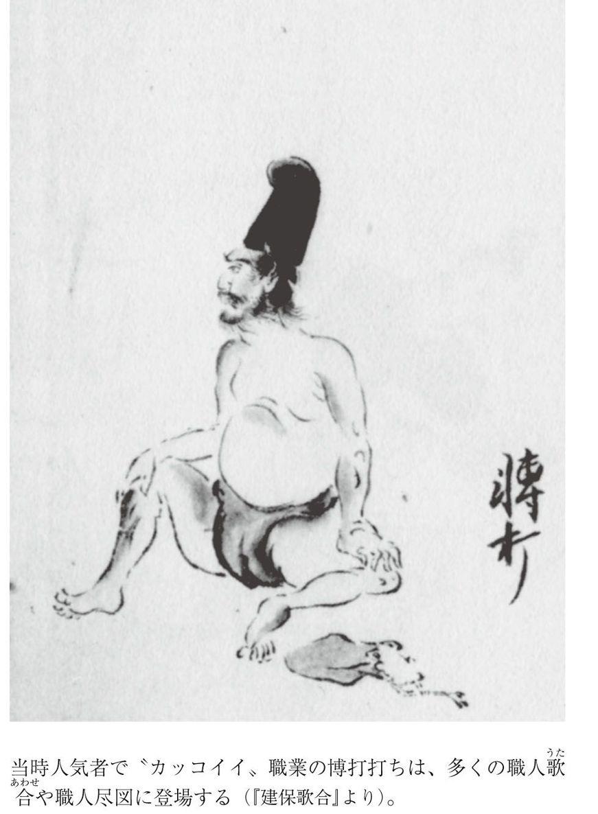
わたしには やさしい あなた
でも あなたには いくつもの 顔がある
ほんとうの あなたは ひとりなのに
きびしい かなしい さびしい
つめたい 意地悪な あなた
でも やっぱり わたしの あなたは あなただけ
【原歌19】
仏は様ざまに在せども 実は一仏なりとかや 薬師も弥陀も釈迦弥勒も さながら大日とこそ聞け
密教思想を背景とした歌謡。大日如来は宇宙の根元の法身であり、さまざまな如来、菩薩も、大日から生まれると説く。きわめて一神教的な発想に近いものであり、仏教は多神教であるといった通俗的理解は、ここでは成り立たない。中世鎌倉新仏教は、法然、親鸞の阿弥陀信仰にしろ、日蓮の法華信仰にしろ、絶対神を信仰する一神教的な傾向を持ち、旧仏教の鎮護国家思想や、その呪術性といった面目を一新していったのである。
釈迦、観音、大日、薬師、地蔵、法華経などの如来や菩薩やお経を鑽仰し、信仰する「仏教歌」は、現存する『梁塵秘抄』の歌謡の多くを占めるが、これらは現代風に作り替えることは難しい。そのうちのごくわずかのものを、仏教色を排して、私訳してみた。「仏」を「あなた」として、信仰を恋愛に喩えたものとして読んでもらいたい。
韓国語で「ニム（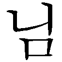）」というのは、「あなた」「恋人」「聖なる者」といった、多様な意味を孕んだ言葉だが、訳語の「あなた」や「恋人」や「いいひと」を、この韓国語の「ニム」のニュアンスを持ったものとして読んでいただきたいのである。
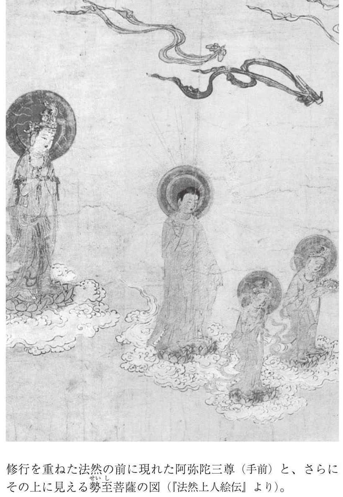
いつでもいるわ わたしのいいひと
見えなくても 触れなくても
ひとごえさえも 消えはてて
わたしにわかるの
夜明けの夢に こっそりと
【原歌26】
仏は常にいませども 現ならぬぞあわれなる 人の音せぬ暁に ほのかに夢に見えたまう
『梁塵秘抄』の代表的な法文歌。「仏」は阿弥陀如来。西方浄土への憧れをうたったものと思われるが、今様で、仏教への篤い信仰心がうたわれていても、それを文字通りの「信仰」ととらえる必要はないだろう。この世を厭い、遥かなる遠い世界への憧れ。かすかなるもの、現実ではない夢のようなはかないものへの憧れや希求が、それをうたっている中世人の心に住み着いていたのである。
あなたの 約束 忘れない
信じて 信じて 待っている
あなたの 名前を呼ぶだけで
ほんとの 幸せ やってくる
【原歌29】
阿弥陀仏の誓願ぞ 返すがえすも頼もしき 一度御名を称うれば 仏に成るとぞ説い給う
阿弥陀如来は、浄土信仰の中心の仏。いわゆる『浄土三部経』のなかで、すべての衆生が成仏しないうちは、自分は成仏しないということを誓願とした。つまり、阿弥陀仏を信じ、「南無阿弥陀仏」と唱えれば、すべての人は救われて、西方浄土に迎えられるのである。親鸞のいう「悪人」においてこそ。専修念仏の教えは、法然から親鸞へと伝わり、浄土信仰は、日蓮の法華信仰、道元の曹洞禅などとともに、日本仏教の基底となった。
わたしは バカな 女です
いいことも 悪いことも 何にも知らない
ただ あなたの 言葉だけがたよりなの
ついて行くわ たとえ 雨が降っていようとも
あなたが 歩いてゆくところへ
【原歌82】
我等は薄地の凡夫なり 善根勤むる道知らず 一味の雨に潤いて などか仏に成らざらん
『梁塵秘抄』には「凡夫」の意識が徹底している。これはもちろん、謙遜でも謙譲でもなく、今様という歌謡の世界の中心にいたのは、遊女や傀儡子、博打打ちなどの芸能民、すなわち当時でいう〝道々の輩〟だったからだ（７ 女にゃ五つの罪があるの図参照）。そのなかには、鵜匠や海人や猟師などの、仏教の教えでは絶対的な戒めである〝殺生戒〟を犯さなければ生きてゆけない人々が多くいた。法然や親鸞のいう「悪人」とは、まさに彼（女）らのことだった。壮麗な寺院を寄進することや、仏像を寺に納めることなどできるはずもない庶民たちがすがりついたのが、阿弥陀の誓願であり、法華経の女人成仏としての龍女の祈り（次ページの歌の解説参照）だったのである。
女にゃ 五つの罪がある
男をとろかす その声も
男をぬくめる その肌も
男をまよわす 愛嬌も
男を死なせる 冷たさも
男をくるわす やさしさも
いまさら 観音さまには
なれはしないけど
泥に花咲く 蓮のように
女は いつかは 花になる
【原歌116】
女人五つの障りあり 無垢の浄土は疎けれど
蓮華し濁りに開くれば 龍女も仏になりにけり
『法華経』の「提婆達多品」にある龍女成仏の説話を踏まえた今様である。仏教では、女性には五障があって、１梵天王、２帝釈天、３魔王、４転輪聖王、５仏身になれないとする。五障というのだから、何らかの差し障りがあって、これらの五つの存在になれないというのはわかるが、その障害の五つの要件は示されていない。
龍女は、女性ということと、畜生であるという二つの差し障りがあって、そのままの姿では成仏ができない。しかし、『法華経』の功徳によって、彼女はいったん人間の男性に〝変成〟し、成仏の道が開かれるのだ（これを〝変成男子〟という）。
古来、『法華経』が女性たちにまで、熱心に信仰されたのは、この〝龍女成仏〟譚があることによる。女が男を迷わす五つの要素を私なりに考えたのが、女の〝五つの罪〟である。
いとしいひとは わたしをみすて
つぎのこいびと まちどおしい
ながい ながい夜の ひとりねの
ベッドをてらす 月あかり
【原歌194】
釈迦の月は隠れにき 慈氏の朝日は未だ遥かなり
その程長夜の闇きをば 法華経のみこそ照らい給え
慈氏とは、弥勒菩薩のこと。弥勒は未来仏であり、五十六億余年後に下生してくるという。その「弥勒世」に出会うために、生きながら土中に埋められるという「即身成仏」の風習が行われたという。弥勒菩薩は、民間信仰の「ミロク」となり、新興宗教教団のなかには、「ミロク信仰」を基盤とするものも多い。富士講、大本教などにそうした教説が伝わる。
原歌は、法華経を絶対的な経典とする法華信仰を背景としており、過去仏と未来仏の中間の時代に、法華経だけが救いになるという教えの歌だ。現代の創価学会にまでつながる、〝南無妙法蓮華経〟のお題目を唱える宗派である。近代では北一輝、宮澤賢治、石原莞爾など、特異な〝法華経信者〟がいる。
あなたが帰った わたしの部屋に
背広の残り香 残るだけ
ドアの近くの スリッパも
履くひとなしに さびしそう
【原歌209】
太子の身投げし夕暮れに 衣は掛けてき竹の葉に 王子の宮を出でしより 沓は有れども主も無し
原歌は、法隆寺の玉虫の厨子に描かれた、釈迦の前身である薩埵王子の「捨身飼虎」の説話を歌謡化したものだ。衣服を脱いで傍らの竹の枝に掛け、沓を脱ぎ、虎の棲む谷間に身を投げて、飢えた虎を救おうとしたのである。こうした説話は、釈迦が如来（仏陀）となるまでに、我が身を犠牲として衆生を救うといった寓話的なエピソードを集めた本生譚（ジャータカ）のなかにあり、釈迦が数々の前生を持つことを物語っている。「沓は有れども主も無し」に強烈な喪失感を感じずにはいられない。恋人の立ち去った部屋の、脱ぎ捨てられたスリッパのように。
甘い言葉も やさしい噓も
あなたの口から 聞きたいの
ほんとの愛など うそっぱち
いまの 夢だけ あればいい
【原歌222】
狂言綺語のあやまちは 仏を讃むるを種として 麁き言葉も如何なるも 第一義とかにぞ帰るなる
仏教は「狂言綺語」を戒める。つまり、理屈に合わない言葉や、巧みに飾り立てた言葉や文章を嫌うのである。それで『源氏物語』という虚構を書いた作者の紫式部は、その罪によって地獄に堕ちて責め苦を受けているという伝説まで生まれた。これでは文学表現や修辞といったものは、一切浮かばれない。後白河院は、今様は仏教信仰に資すると語る。歌謡は「狂言綺語」の類ではなく、真実の言葉だからだ。
マリアさまだって もともと おんな
ててなし子を 生んだのは
わたしといっしょ
おんなじさだめの おんななのに
だれも あたいを
マドンナなんて 呼んじゃくれない
そんなマリーの ひとりごと
【原歌232】
仏も昔は人なりき 我等も終には仏なり
三身仏性具せる身と 知らざりけるこそあわれなれ
『平家物語』では、「仏御前」に平清盛の寵愛を奪われた白拍子の祇王が舞い歌った今様である。本来は『梁塵秘抄』の歌謡のように、人間すべてが「仏性」を持っていることを知らずに俗塵にまみれていることを嘆く歌だが、この最後のひとくさりを『平家物語』で祇王は「仏御前」も「私」も、もともと同じ「人」なのに、「へだつるのみこそかなしけれ」と替えてうたったのである。
当意即妙の替え歌をうたう。これが今様の芸能者に求められるものであり、時代や場所や状況によって、今様は次々と変転してゆく。そうした変化こそが、今様の身上であり、固定化し、テキスト化されたものは、その〝抜け殻〟にすぎないといっても過言ではないのである。
としとるなんて いやなこと
おもえば おもうほど いやんなる
天国なんて はるかに遠い
ナンマンダブツ アーメン ソーメン
【原歌235】
われらは何して老いぬらん 思えばいとこそあわれなれ
今は西方極楽の 弥陀の誓いを念ずべし
「生老病死」の四苦はいかんともしがたい。お釈迦さまの悟りはそこから始まった。だんだん年を取ってくると、「あの世」が近くなってくることがひしひしと感じられる。あとはただ阿弥陀如来の誓願におすがりして、西方浄土に迎えられることを願うしかない。『梁塵秘抄』には、若さを誇るような歌謡はあまりない。年寄りの繰り言のようなものが多いのは、編纂者の後白河院が、ベテランの遊女や傀儡女（「傀儡女」も遊女とほぼ同義）などの〝今様歌い〟に今様を伝授されたからだろうか。
ひとりねの朝に めざめて 見た夢の
あなたの面影を追いかけて
ひとり 涙を流すのよ
はかなく つらい ひとの世を
どうして 生きれば
ほんとの幸せ くるのやら
【原歌238】
暁静かに寝覚めして 思えば涙ぞ抑え敢えぬ はかなく此の世を過ぐしては いつかは浄土へ参るべき
百人一首にもある「あしひきの山鳥の尾のしだり尾のながながし夜をひとりかも寝ん」（伝柿本人麻呂）は「あしひきの山鳥の尾のしだり尾の」までが「ながい」にかかる序詞で、「ひとりかも寝ん」だけが実質的な歌の内容である。山鳥の尾がそんなに長いものかどうか知らないが、この長い序詞が、いかにもうんざりするような夜の長さを表現している。『梁塵秘抄』には「ひとりね」という言葉がわりと多く出てくるが、この原歌自体には使われていない。しかし、長い夜の途中で目覚めて、「ひとりね」の淋しさを実感している歌と読んだ。
はかない この世を生きるため
だました男と噓の数
うみ やま ほどに数え切れない
ザンゲの値打ちもないほどに
【原歌240】
はかなきこの世を過ぐすとて 海山稼ぐとせしほどに
万の仏に疎まれて 後生わが身をいかにせん
原歌は、海山で魚を獲ったり、獣を獲ったりして殺生を重ねる漁師・猟師が、その罪におののき、後生のことを案じるという歌だが、訳では思い切って「悪女」の歌とした。「ザンゲの値打ちもない」は、もちろん、阿久悠氏の名歌の歌詞からの拝借（よくいえば引用、悪くいえば盗用）である。「後生わが身をいかにせん」とは、深刻な罪障感ではなく、定型的な感慨を言葉にしたものだろう。
近江の湖は 海ではないのです
天台のお薬師さまの ちっぽけな池なのです
どんな海って？
ジョーラクガジョーの風が吹けば
シチホーレンゲの波が立つのです
【原歌253】
近江の湖は海ならず 天台薬師の池ぞかし 何ぞの海 常楽我浄の風吹けば 七宝蓮華の波ぞ立つ
琵琶湖を比叡山の山の上から眺めた景色だろうか。日本一の大きな湖でも、薬師如来の浄土ではちっぽけな池でしかない、ということだろう。ところで『梁塵秘抄』で使われている「常楽我浄」とか「七宝蓮華」とかの仏教経典に由来する漢語の言葉は、当時の今様歌の聴衆には、何のことやらまったく理解ができない言葉だったのではないか。ただ、有り難いだけの「ジョーラクガジョー」「シチホーレンゲ」（レンゲは分かるかもしれないが）という音のつらなりとして受け止められたのだろう。「ナンマンダブ」「ナンミョーホーレンゲキョー」の念仏やお題目が庶民には単なる呪文としてしか捉えられなかったように。
熊野へゆこう 熊野へゆこう 熊野にね
紀伊路ラインか 伊勢路ラインか
どっちが近く どっちが遠い
二人で ドライブだったら
どっちにしたって 快適さ
【原歌256】
熊野へ参るには 紀路と伊勢路のどれ近し どれ遠し
広大慈悲の道なれば 紀路も伊勢路も遠からず
熊野詣での今様である。熊野本宮、熊野速玉社（新宮）、熊野那智宮の三つの熊野神社を詣でることが中世には流行った（これを「三熊野詣で」といった）。京都から難波を通る紀伊路には、田辺から本宮への中辺地ルート、新宮から本宮へ至る大辺地のルートの二つがあり、伊勢路は、京都から伊勢に出て、三重の海岸伝いに新宮から本宮に入るルートだった。いずれも、京から遥かな道のりで、一カ月ほどかかったという。それでも、熊野に参ろうという熱意にうながされて、蟻の熊野詣でとさえいわれるほどに、京の天皇や上皇、貴族たちは競って熊野へと向かったのである。『梁塵秘抄』の編纂者である後白河院は、三十四回も、熊野詣でをしたと伝えられている。
熊野へゆこう 熊野へゆこう 熊野にね
ハイキングじゃ 遠すぎる
山登りじゃ 大変だ
乗馬じゃ少し 楽すぎる
いっそ 気球か ハングライダーで
空から ふわりふわりと ね
【原歌258】
熊野へ参らんと思えども 徒歩より参れば道遠し
すぐれて山峻し 馬にて参れば苦行ならず
空より参らん 羽賜べ若王子
熊野詣での歌のなかでは一番よく知られた歌だろう。熊野に行くには、歩いてゆくのは難儀だし、馬で行っては修行にはならない。だったら、「空より参らん」「羽賜べ若王子」という、発想の転換が素晴らしい。私はどうしてもこの一句から、烏天狗（伝説上の生き物で、小天狗などとも呼ばれる）のような「若王子」の神さまを連想する。ヘリコプターではなく、熱気球や翼のあるハングライダーがイメージにはぴったり合う。
熊野に来れば 権現さまは 名草の浜にいるという
いやいや 和歌の浦にいらっしゃるという
ワカはワカでも 年寄りなのに 若王子とは これいかに
【原歌259】
熊野の権現は 名草の浜にこそ降り給え 和歌の浦にし在しませば 歳はゆけども 若王子
「権現」とは仏や菩薩が日本の神として仮の姿で現れたもので、熊野神社はそうした権現信仰の中心。
この歌自体は、熊野の信仰の一連の歌でも、単に「歳はゆけども若王子」というシャレを引き出すための戯れ歌としか思えない。「若い」ということは、現代のように肯定的、プラスの意味ではなく、粗野だ、荒々しい、未熟といったマイナスの意味のほうが強かったと思われる。「若宮」「若王子」は、霊験あらたかだが、時としては、荒ぶるタタリ神として恐れられていたのである。
この世に 女と生まれて
たった一度の人生に
あなたと逢えたの 嬉しいわ
幸せなのよ あなたと過ごす この身の上が
もう一度 生まれ変わっても
女と生まれて あなたに逢いたい
【原歌294】
娑婆に須も宿れるは 一乗聞くこそあわれなれ 嬉しけれ や 人身再び受け難し 法華経に今一度 争でか参り会わん
輪廻転生は、天上界、人間界、修羅界、畜生界、餓鬼界、地獄界の六つの世界（六道）のいずれかに生まれ変わることである。このうちで、天上界、人間界は、なかなか生まれ変わることが難しい。その人間界に生まれて、法華経の教えに出会うことは、さらに難しく、奇蹟的なことだ。「あなた＝法華経」と出会えたことを、感謝しても、感謝しても、し切れないのである。私訳ではそれを「女と生まれた」境遇に喩えてみた。
春の焼け野で 若菜を摘めば
修行中の お方が いらっしゃる
たった一人で 野辺を褥に
そんなところで 寝るよりも
さあさあ いらっしゃい わたしらの家へ
むさくるしくても ここより ましよ
【原歌302】
春の焼野に菜を摘めば 岩屋に聖こそ坐すなれ 唯一人 野辺にて度々逢うよりは な 去来給え聖こそ 賤しの様なりとも 妾らが 柴の庵へ
岩屋や野原で修行中の「聖」を、若い女性の姿をした「天魔」が誘惑する歌である。もちろん、そうした誘惑を断ち切ることが修行（苦行？）の一つなのだが、歌自体は、『万葉集』冒頭の天皇の歌のように、春の野原での歌垣（男女が山や海で豊作や豊漁を祈ったり祝ったりする、古代の習俗。多く春と秋に行われた。自由な性的な交わりが許される場といわれる）のような、素朴でおおらかな性の寿ぎのような感じがする。「妾らが」といっているのだから、女性は一人ではない。「柴の庵」というのは、若い女たちの集うハーレムのようなところなのだろうか。
きょうは 嵯峨野へ ピクニック
鵜飼の舟に 筏流し
流れ紅葉も ステキだわ
山の蔭から 響いてくるのは お琴の音
ここは ほんとに お浄土に 遊びにきたみたい
【原歌309】
嵯峨野の興宴は 鵜舟筏師流紅葉 山蔭響かす箏の琴 浄土の遊びに異ならず
嵯峨野は、昔から観光名所だった。鵜飼舟や、勇壮な筏流しを見物し、流れ紅葉を愛でながら魚を食べ、酒を飲む。山蔭から聞こえてくる箏の琴（最もポピュラーな、十三絃の琴のこと）の音。まったく「極楽、極楽！」と言いたいような至福感ではないだろうか。嵯峨野の「浄土遊び＝三船祭」は、中世の風流人の、まさに「興宴」だったのである。
「お浄土」というコトバは、森敦の最後の小説集『浄土』の中で、登場人物の女の子が「お浄土みたいね」と言ったのを使わせてもらった。
さあさあ 四方八方に 霊験あらたかな お社は 数々あれど
まずは 伊豆の走湯権現 お湯に入れば 恋の病いも ぴたりと治る
信州信濃の戸隠にゃ 正観音さまこそ いらっしゃる
駿河の国に茶の香り そのなか すっくと立ったる 日本一の富士の山
浅間神社は そのてっぺんに 鎮座まします
つぎは 伯耆の大山だ ホウキといっても 庭は掃かない
丹後の宮津じゃ タンゴは 踊らぬ
土佐の室戸は お大師さまの 修行の跡だ
讃岐の志度の道場も 観音さまのお膝元
うどん啜れば 命も伸びる ときたもんだ
【原歌310】
四方の霊験所は 伊豆の走湯 信濃の戸隠 駿河の富士の山 伯耆の大山 丹後の成相とか 土佐の室生戸 讃岐の志度の道場とこそ聞け
日本全国の霊験あらたかな観音霊場、修行場を列挙した歌だ。訳には、私が勝手にその地の名物と思われるものをつけ足した。すべて神仏混淆の霊場であり、中世の宗教の状態は、「神仏習合」が当たり前であったことを示している。「神仏分離」は、明治以降の「近代」の産物なのである。
「伯耆」と「箒」は掛詞、「箒」と「掃く」は縁語、「丹後」と「タンゴ」は掛詞、「タンゴ」と「踊る」、「うどん」と「伸びる」はともに縁語である。
清水寺にまいるには？ 京極あたりで 南へ下って 五条まで
さてさて 石橋は たたいて渡って 東の橋詰
四つの棟は 六波羅蜜寺よ
愛宕の 念仏寺に 雲居寺には 大仏さま 深井のあたりにゃ 何がある？
そこを過ぎたら 八坂寺 背伸びして 石段一段 上ってみれば
見えるは 主典大夫の仁王堂
塔を下れば 祇園の神の天降りした末社 南をみれば 手水の棚よ
さてさて 手水を終わって 清水の観音さまへ 手を合わせ
拝めば 音羽の滝が見えまする
ああ 有り難やの 滝の水 清い水とは ほんにこのこと
【原歌314】
いづれか清水へ参る道 京極くだりに五条まで 石橋よ 東の橋詰四つ棟六波羅堂 愛宕寺大仏深井とか それをうち過ぎて八坂寺 一段のぼりて見おろせば 主典大夫が仁王堂 塔の下天降り末社 南をうち見れば 手水棚手水とか 御前に参りて恭敬礼拝して見おろせば この滝は様がる滝の 興がる滝の水
清水寺は、最初の征夷大将軍の坂上田村麻呂が、その東北征伐であまりに多くのエミシを殺したので、その魂を祀るために建てたと伝えられる、観音菩薩を本尊とした寺である。〝清水の舞台から飛び降りる〟といった成句があるように、寺院内の能舞台は有名。名前の通り、境内には滾々と清水が湧き、音羽の滝という水汲み場があり、霊水として尊ばれる。エミシの頭領のアテルイを俘虜として京都に連れてきたが、だまし討ちにし、その首を刎ねた血を洗い流した水ともいう。寺名にはふさわしくない、血塗られた縁起を持っている。
めでた めでたの ツル カメさまよ
富士を支える カメの万年甲（劫）
山の下には 泉湧く
苔の生すまでに巌は育ち
若松さまも 枝は栄えて 葉も繁る
梢に遊ぶ ツルは千年
さても めでたし この歌は
【原歌316】
万劫年経る亀山の 下は泉の深ければ 苔ふす岩屋に松生いて 梢に鶴こそ遊ぶなれ
鶴は千年、亀は万年といわれる、長寿のシンボルを並べたもの。涸れることのない泉、苔むす岩、青々とした若松も、不老長寿の象徴である。朝鮮には「十長生」という長寿を表す十種類のシンボルを描いた絵があり、それは鶴亀、松竹梅、キノコ、泉、岩、太陽、月であり、それを一つの画面に描き込んでいる。これはそうした長寿を象徴する、めでたいものを歌のなかにうたい込んでいるのである。「めでた／めでたの／若松さまよ／枝も栄えて／葉も繁る」という民謡のスタイルに倣った。
ゴールド・ラッシュの 山の中
ツルとカメとが おしゃべりしてる
こっそり子どもが 聞いたなら
あそこを 掘れば 一攫千金
見つけた奴は 大金持ちさ
【原歌320】
黄金の中山に 鶴と亀とは物語り 仙人童の密かに立ち聞けば 殿は受領に成り給う
「殿は受領に成り給う」というのを、現代風によく分かるように訳すのが難しく、歌の主旨をちょっと変えてしまった。「受領」というのは、国司として赴任する役職で、いわば地方長官として、その在任中に多大な富を蓄積することのできる、大変オイシイ職位であったようだ。現在なら、県知事とか、地方自治体の行政府の長なのだろうが、「受領」の大出世にはどうも匹敵しようがなさそうだ。インドのマハラジャ（藩王）ぐらいの感覚だろうか。強いて現代風に訳せば、「あの方（上司）は知事におなりになる」ということだが、東京や大阪、宮崎県などで、「知事」の権威や権勢といったものが低落傾向にあるので、「受領」を、単純に「知事」と訳すのはためらわれる。
鈴を振ってる 巫女さんよ
鈴は 目より上にあげて 振るものなのに
あれあれ ゆらゆら 振り上げて
こんどは 目の下あたりで 振っている
疲れちゃったのか 物憂そう
それじゃあ だめだめ なまけていると
神さまが 腹をたててしまいます
【原歌324】
鈴はさや振る 藤太巫女 目より上にぞ鈴は振る ゆらゆらと振り上げて 目より下にて鈴振れば 懈怠なりとて 忌々し 神腹立ち給う
鈴を振って踊っている巫女を見て、その評判をしている見物客の歌である。鈴は目より上に持ち上げて振るものなのに、疲れたのか、面倒くさいのか、目より下のところでおざなりに振っている。それじゃあ、神さまが「なまけもの」ということで、腹を立ててしまうだろうという意味である。神事というより、芸能化していて、それもマンネリと化して、演ずる方も、あまり真剣になっていない様子がうかがわれる。「藤太巫女」というのは、百足退治で有名な俵藤太の信仰に関わる巫女集団という説を、植木朝子氏（『梁塵秘抄とその周縁』）が提唱している。
ここは 筑紫の門司の関
関所の関守さん
寄せくる年波で 鬢の毛も白くなった
何のために 関所をもうけた？
関の 関屋の 関守さんならばこそ
行く年さえも せき止めてごらん
【原歌328】
筑紫の門司の関 関の関守老いにけり 鬢白し 何とて据えたる 関の関屋の関守なれば 年の行くをば留めざるらん
関所の関守だといっても、「時」の過ぎゆくのをせき止めるわけにはいかない。いつしか、鬢も白くなり、過去を懐かしむようになる。関門海峡の潮の流れのように、「時」はただ流れ去るのみなのだ。この年老いた関守の目の前で、やがて平家の滅びる壇ノ浦の合戦が行われるのである。盛者必衰のことわりを表すように。原歌の本歌は、源重之の「昔見し関守も皆老いにけり年の行くをばえやは留むる」である。
くるくる 可愛く 踊るもの
巫女の神楽舞い
風に舞う木の葉に 車の輪とか
独楽遣いの独楽に
蛙男のダンスに 手回し人形
花の園では 蝶々や小鳥
【原歌330】
よくよくめでたく舞うものは巫小楢葉車の筒とかや 八千独楽蟾舞手傀儡 花の園には蝶小鳥
「舞う」はおもに旋回運動、「踊る」はおもに跳躍運動を指すという。この場合は「舞う」だから「回る」ものだが、現在では「ダンス」は一般的に「踊り」と称するから、「くるくる 踊るもの」とした。次の【331】と同工異曲である。「八千独楽」は、独楽遣いの芸能だが、実体は不明である。『信西古楽図』に描かれたような、沢山の独楽を使っていっぺんに回す散楽（物まねや軽業、曲芸などの演芸全般を指す。猿楽ともいう。能・狂言の源流となったといわれる）の芸能か。「蟾舞」は、ヒキガエルのような醜い道化役の、侏儒のダンスであり、見せ物芸である。「手傀儡」は、傀儡子が、胸の前に下げた箱の上で、両手で操り人形を舞わせるもの。洛中洛外図や絵巻に、その姿が描かれている。
おもしろ おかしく 舞うものは
巫女の神楽舞い
風に舞う木の葉に 車の輪とか
平等院のある宇治に かかった水車
囃し立てれば 踊り出す
カマキリやカタツムリ
【原歌331】
おかしく舞うものは 巫小楢葉車の筒とかや 平等院なる水車 囃せば舞い出づる蟷螂 蝸牛
もともと源融の別荘として建てられた平等院は、藤原道長の後の時代には華麗な鳳凰堂で知られた。その平等院のある宇治川の上流には水車があり、宇治の名物だった。水車だから、くるくるとよく回ったから、「回る」ものの代名詞のようになったのである。
【330】の「花の園には蝶小鳥」もそうなのだが、「囃せば舞い出づる蟷螂 蝸牛」の結句は、子ども相手の遊戯の感覚があり、童謡調である。『新猿楽記』には「蟷螂舞之頸筋」という芸能の名前があるから、これはカマキリを真似た芸能の一種だったかもしれない。
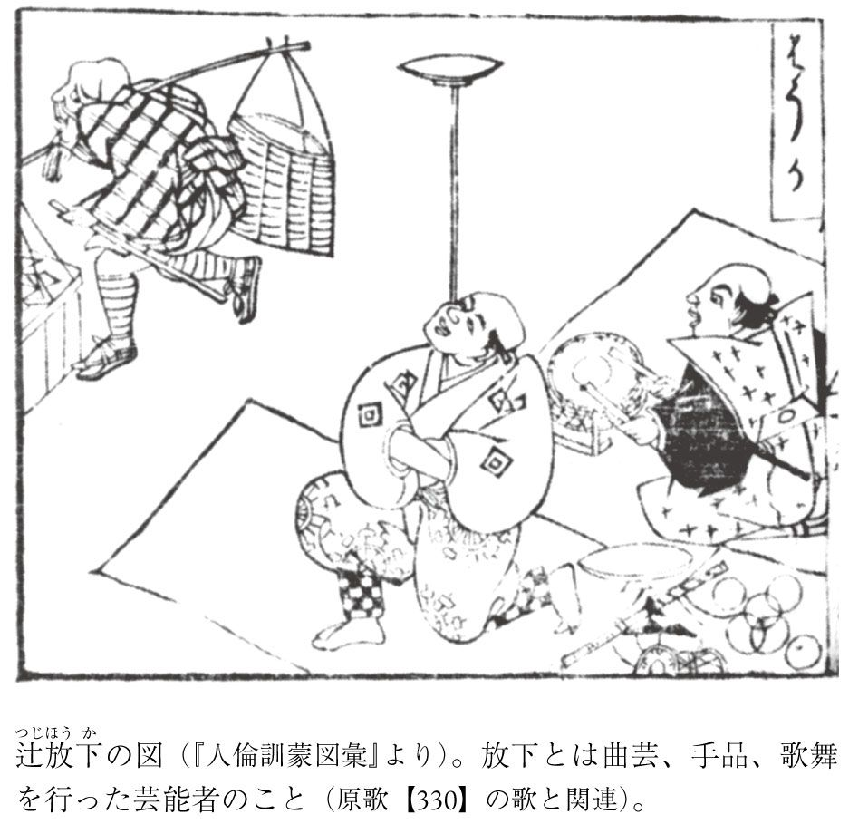
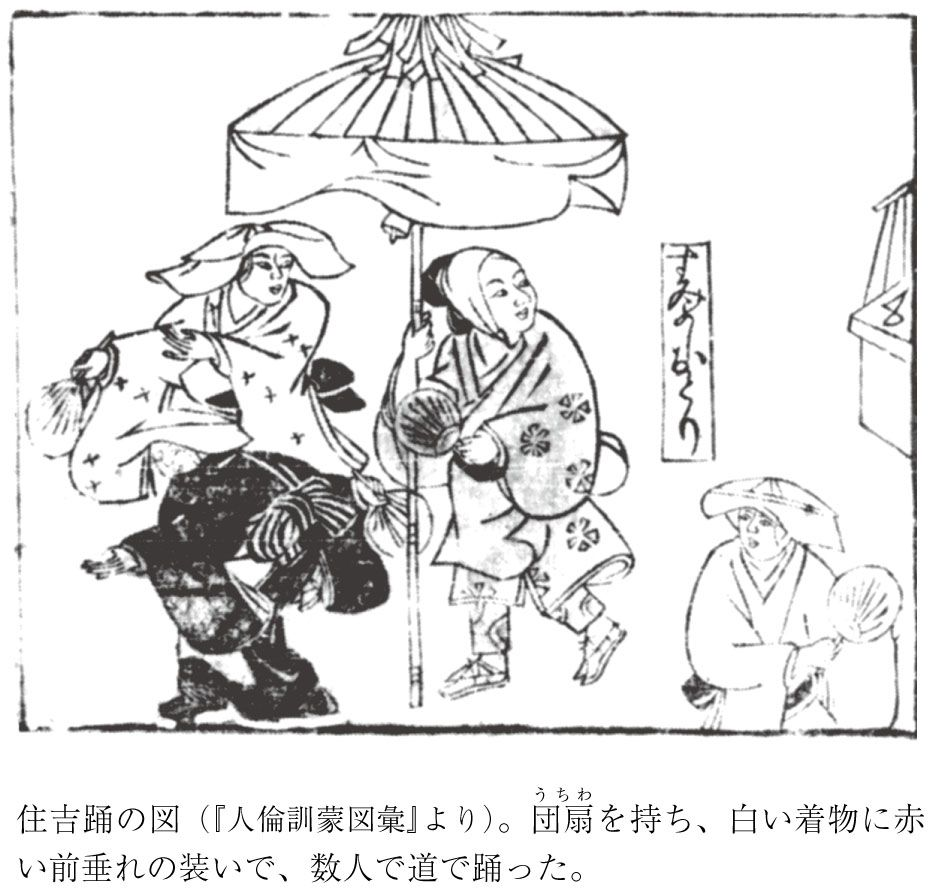
恋するふたりは ステキだわ
空には 織姫彦星 並んでキラめき
野辺には山鳥 秋の鹿 鳴き交わす
流れ女の愛のささやき
冬のおしどりは しっぽりと
【原歌334】
常に恋するは 空には織女流星 野辺には山鳥秋は鹿 流れの君達冬は鴛鴦
織女と彦星（流星）は、一年に一度しか逢うことのできない、相思相愛のカップルの象徴である。山鳥や秋の鹿は、番いになることを求めて、哀しげな声で鳴く（啼く）のである。「流れの君達」とは、一夜の客を取りながら流れ歩く遊女のことであり、彼女たちは、いつも一夜をともにする男を求めて、声を上げるのだ。うまく結びつきあえたら、しっぽりとオシドリ夫婦。しかし、それも一夜限りである。
こんなに飾った アパートの部屋に
あなたの靴音 聞こえない
ようやく ノックがしたけれど
すねたわたしは いじわるするわ
ゆうべも 待ったわ おとといも
後悔しても もう遅い 遅いのよ
ドアにもたれて ノブをおさえて まぶたつむるの
【原歌338】
厳粧狩場の小屋並び しばしは立てたれ閨の外に 懲ろしめよ 宵のほど 昨夜も昨夜も夜離れしき 悔過は来たりとも来たりとも目な見せそ
「厳粧狩場」は、キレイに飾りたてた狩場（狩小屋）であると、ほとんどの注釈書には書いてある。どんなものだか、ちょっと想像がつかない。逢い引きの場所として使われたのだろうか。それで、訳歌では、ごく普通のアパートにして、そこで男を待っている女の一人称の語りとした。待ちくたびれて、すっかり、すねてしまった女の可愛さを表現したつもりである。こうした〝待つ身〟の心情は、『梁塵秘抄』の時代も、現代も、あまり変わらないものかもしれないが、中世の女性のほうが、「目な見せそ」と、強気なのである。私訳の現代女性の「可愛らしさ」は、私の願望ということになる。
いまさら 頼みにならない男など
待っていないわ 待たないわ
頭に 三本 角生やし ひとの嫌がる鬼となれ
そして みんなにうとまれて
シモ ユキ アラレ降る 冷たい田圃の鳥となれ
そして あまりの足の冷たさに
ゆらゆらゆれる浮草の
ゆらゆら ゆらゆら さまよい歩け いつまでも
【原歌339】
われを頼めて来ぬ男 角三つ生いたる鬼になれ
さて人に疎まれよ 霜雪霰降る水田の鳥となれ
さて足冷たかれ 池の萍となりねかし
と揺りかう揺り揺られ歩け
『徒然草』第五十三段に鼎をかぶった仁和寺の法師の話がある。酒宴で興に乗って盛り上がった僧の一人が、そばにあった鼎を頭にかぶって踊り出したのである。みんなは面白がってやんやの喝采、手拍子ではやし立てたが、踊り終わって、さて鼎を取ろうとするが抜けない。無理に引き抜こうとしても、鼻や耳がひっかかり、僧は痛がって涙を流している。しかし、そのままにしておいては命にもかかわるということで、少々のことは我慢とばかりに、力まかせに無理矢理引き抜こうとしたら、鼻や耳は千切れ、血を流しながらだがようやく抜けた。あまり、興を求めすぎるのも、「あいなき（無益な）」ことであるというのが、兼好法師の結論である。
この鼎をかぶった僧の踊ったのが、この「三本角の男」の今様ではないかというのが、榎克朗氏の説である（新潮日本古典集成『梁塵秘抄』）。鼎はもちろん三本の足があり、それをかぶると、まさに「角三つ生いたる鬼」にふさわしい姿となる。頭が重いので、足どりは当然、「ゆらゆら」となるだろう（もちろん、演技でもある）。酒席の座興としては、その咄嗟の趣向にやんやとはやし立てずにはいられない。だが、それが一転して、悲劇となるのが、人生の〝無常〟たるゆえんだ。カラオケで調子に乗りすぎて、上司や大事な客の不興を買ったりするのはありがちなことである。〝あまりに興あらむとすることは、必ずあいなきものなり〟なのである。『紫式部日記』に「池の浮草」という今様をうたうという文章があるが、それもこの「三本角の男」の歌だったかもしれない。足の冷たさに足踏みをしたり、体を揺らしたりする。そんな所作が受けたのかもしれない。当時、よほど流行った歌だったのだろう。
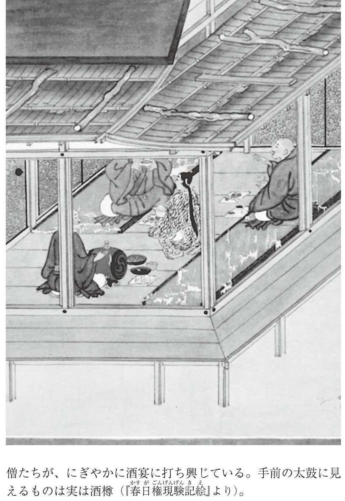
独身男が ようやくに 嫁取りに行ったのはいいけれど
ようよう二夜は こらえにこらえて いっしょに寝たが
三日目の夜の その晩の 夜半ばかりの あかつきに
ズボンも履かずに 逃げ出した 女房が怖いと いいながら
【原歌340】
冠者は妻設けに来んけるは 構えて二夜は寝にけるは 三夜という夜の夜半ばかりのあか月に 袴取りして逃げにけるは
正式の結婚の披露宴（露顕）の前夜に逃げ出した男のことをうたっているのだが、何で逃げ出したのか、今ひとつ、分からない。当時の聴衆には、これで十分に分かったのだろうが。「構へて二夜は寝にけるは」の「構へて」がキーワードになりそうだが、「（無理に、心して）寝にける」ということだから、やはりセックスの問題ではないか。あまり、妻の要求が激しかったので、二晩は耐えたものの、三日目の晩に、これじゃあ体がもたないと逃げ出したというのが私の解釈である。『新猿楽記』に「氷上専当が取袴」というのがあるから、すでに芸能化したパフォーマンスを伴ったものと思われる。
あんたは 情なし かいしょなし
別れようとも いっしょにならないとも いわぬのに
親の許さぬ恋じゃもの 切れろ 別れろなんて
ひとりもんの時に いうことよ
【原歌341】
わぬしは情なや わらわがあらじとも棲まじとも 言わばこそ憎からめ
父や母の離けたまう仲なれば 切るとも刻むとも世にもあらじ
結婚を親が反対するというのは、いつの時代、いつの世でもあるのだなと思わせる。「わらわ」というのだから、この歌の主体は女性だろう。「わぬし」と呼ばれている男のほうが、なかなか煮え切らない感じである。「切るとも刻むとも」という気っ風のよい言いかたに、この時代の女性の気の強さを感じる。「あんた、しっかりしなさいよ」と、尻をたたかれているのが、男なのである。
美女を見るたび 一本の 蔓草にでもなりたいな
根本から枝の末までも からみつきたい すがりたい
切られようとも 刻まれようとも
離れはしない わが運命
【原歌342】
美女打ち見れば 一本葛へも成りなばやとぞ思う 本より末まで 縒らればや 切るとも刻むとも 離れ難きはわが宿世
謡曲の『定家』に描かれた、藤原定家が式子内親王に執着して、死んでから葛となって、内親王の墓に絡みついたという伝説がある。げにも恐ろしきは、「美女」に対する愛執である。「宿り木」だの「蔦葛」などの寓喩は、植物的恋愛とか、草食系などとはいっていられないほどの妄執ではないか。「縋る」「絡む」「縒る」という糸ヘンの動詞が、いかにも生々しく思えてくるのが、この歌の効用だろうか（すべて性的な意味に解釈される）。
あんたの 愛したアヤイ笠
落ちちゃった 落ちちゃった
賀茂川の さらさら流れる川床に
それを拾おうと しっとり濡れて 捜してみたが
明けちゃった 明けちゃった
さやさやと さわやかな 短い秋の夜は
【原歌343】
君が愛せし綾藺笠 落ちにけり落ちにけり
賀茂川に川中に それを求むと尋ぬとせしほどに
明けにけり明けにけり さらさら清けの秋の夜は
「アヤイ笠」とは、藺草で作った、もっぱら男が狩に出る時などにかぶる笠である（流鏑馬の時に射手がかぶっている笠）。その気に入っていた笠が、風に飛ばされて賀茂川に落ちてしまった。それを捜しに水に入ったのだが、捜しきれないうちに夜が明けてしまったというのである。
これまでにさまざまな解釈があり、一般的には女性が、川に落としてしまった、男性の好んでいた笠を拾おうと、川に入ったと解釈するが、女性（遊女）のところに行けなかった男の言い訳であるとか、遊女が客を引き留める歌であるとか、あるいは、男同士の主従関係であるという説もある。私の解釈は、男と女が一晩〝しっとり濡れ〟た関係を、アヤイ笠を捜して夜が明けた、と表現したものと思っている。「アいせし アやいがさ」「サらサら サやけの」の頭韻がとても効果的で、『梁塵秘抄』のなかでは、屈指の名歌のひとつであると思う。
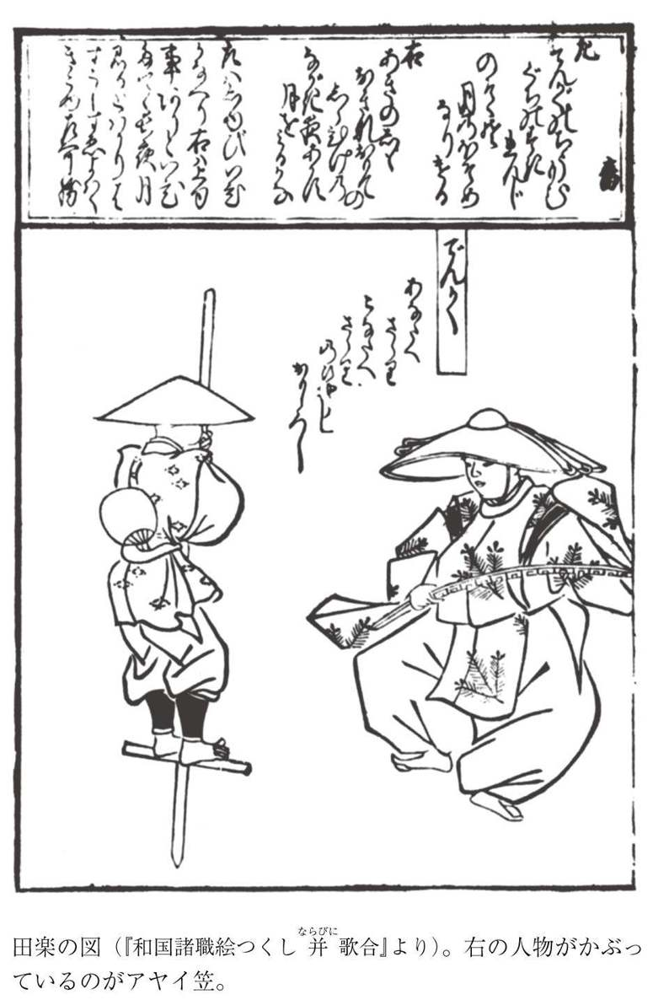
月給トリは かわいそう
劫（甲）を経たる女房に 首に縄をゆわえられ
ムスコ ムスメに 脛かじられて
飲み込む月給 吐き出せば
わが小遣いは どうしよう？
【原歌355】
鵜飼はいとおしや 万劫年経たる亀殺し また 鵜の首を結い
現世はかくてもありぬべし 後生わが身をいかにせん
原歌は、殺生戒を犯す鵜飼の〝罪深さ〟を嘆くものだが、訳歌では、鵜飼に使われる鵜を「月給トリ」と見立てて、女房や子どもたちなどを、彼の首に縄をゆわえる鵜匠とした。サラリーマンの家長の悲哀の歌である。銀行振込みの月給では、喉元までさえも飲み込めずに、綱をあやつる者にすべて取られてしまうのである。その後に、ほんのちょっぴりだけお小遣いを分け与えられるのである。鳥類の嘆きは尽きない。
なお、鵜飼の歌は『梁塵秘抄』に数首あるが、いずれも、仏教の殺生戒を犯す我が身の罪業の深さをうたっている。
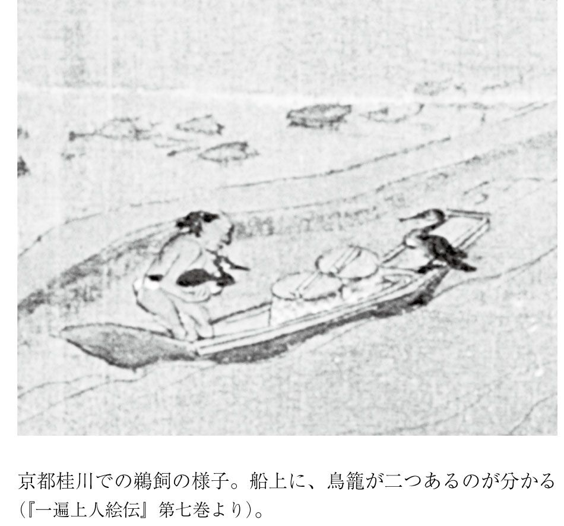
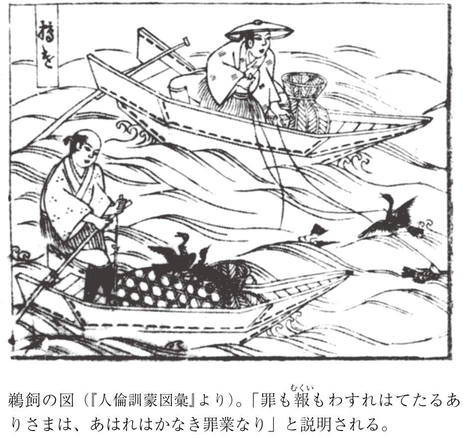
鳥は鳥でも 羽根ない鳥は
炭とり 舵とり 相撲とり
おっとり うっとり しっとりと
ひとりで わびしい かんこどり
【原歌357】
羽なき鳥の様がるは 炭取楫取かいもとり
石取 虎杖垣生に生うてふさるとりや
弓取筆取小弓の矢取とか
「鳥は鳥でも羽根のないトリは」という謎かけである。「かいもとり」は、「かいもつる」と同じ意味で「まつわりつく」こと。「石取」はお手玉の遊戯。「イタドリ」「サルトリ」は植物名。「弓取」は、弓を取る弓の達人、武士のことを指す。
トリはトリでも、借金取り（トリ）や、スカートの中を盗み撮り（ドリ）することなどは、嫌われてもしかたがないのである。『梁塵秘抄』には、こうした謎かけや、言葉遊びの歌謡が多くあり、宴会の遊戯歌として人々に好まれたのだろう。
遊ぼうよ 遊ぼうか
夕暮れまではまだ遠い
路地には子どもがまだいっぱい
遊ぼうか 遊ぼうよ
石蹴り 縄跳び
隠れ鬼
遊ぶ子どもの声聞けば
体のしんから揺れてくる
遊び心がむずむずと
遊ぼうよ 遊ぼうね
揺らぎ 揺れてく わたしの体
【原歌359】
遊びをせんとや生まれけん 戯れせんとや生まれけん
遊ぶ子どもの声きけば わが身さえこそゆるがるれ
【異訳】
オトコのオモチャと生まれてきたわ さわられ なでられ 抱かれるために
たまにゃ ひとりで 生きたくもなるが こみあげる 悲しみ なんとしょう
『梁塵秘抄』のなかでももっとも有名な歌謡だろう。「遊ぶ」「戯れる」「揺れる」という、現在も使われる簡単な言葉で作られているのだが、その解釈は分かれる。代表的なのは、この歌の主人公を「遊び女」すなわち「遊女」と見て、「遊ぶ」ということに罪業感を抱き、無邪気で無心な子どもたちの「遊ぼう」という言葉を聞いても、自分の罪の重さに身が揺らぐような思いがする、というものだ。いかにも、仏教思想的な解釈だろう。私の解釈は、「遊ぶ」も「戯れる」も文字通りの意味であり、無邪気な子どもたちの遊び唄を聞いて、自分も遊びたくて体がむずむずしてくる、というのを素直にうたったものと解釈する。今様の多くが白拍子や遊女などの芸能民にうたわれたことは確かだが、歌そのものの主人公をそれらの人々に擬する必要はない。八代亜紀が波止場女の歌をうたったからといって、八代亜紀が本当に波止場女である必要はないのと同じことだ。小林旭が、酒場女として〝昔の名前で出てい〟たら、気持ちが悪いのと同じだ（？）。遊女がうたえば、遊女の感慨をうたったものとなり、そうでない人がうたえば、「遊び」に夢中になる人の歌になる。「異訳」のほうは、遊女の罪業の深さをうたうという解釈を、ちょっとひねって「遊女の歌」とした。
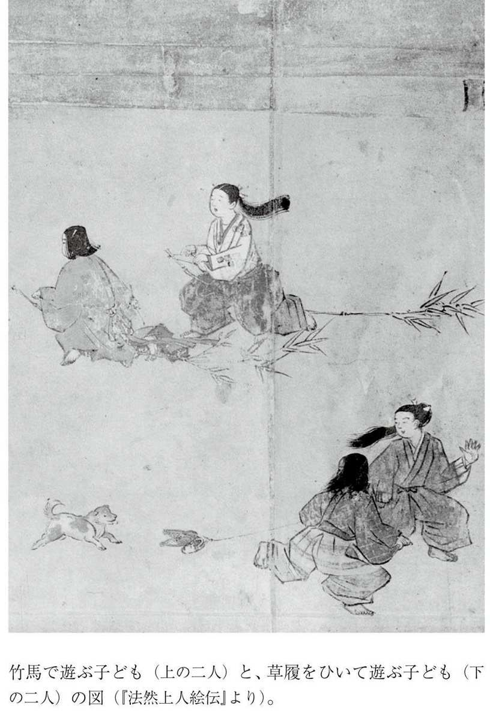
せっかくお店に誘っても
あなたは遊びもしないで 帰るのね
ほらほら あたしの胸は 燃えさかり
あなたが恋しい 肌が火照るわ
【原歌360】
御前に参りては 色も変らで帰れとや 峰に起き臥す鹿だにも 夏毛冬毛は変るなり
中世には神社仏閣の門前に遊女たちと遊ぶ場所があったことは、公然の事実である。せっかく神仏の「御前」に来たのに、遊んでゆかないあんたはヤボな人だと、女性が詰っているのである。「色も変らで」というところに、「色即是空」などの仏教語の「色」なども思い出して、なんだかおかしい。鹿は、秋に連れ合いを呼ぶために、悲しい声で鳴き交わす。そんな鹿のように、あたしといっしょに寝たら、鹿の毛色が変わってしまうように、あなたの人生も変わってしまうかも、と誘惑しているのである。
私訳では、「お店」というのは、いかがわしい、いわゆる〝フーゾク〟のピンク・サロンのようにしてみた。
山また山の ふるさとを
十五の時に 出てきたの
山坂 海坂 はるばると
ようやく 都に着いたのに
小鳥の産毛じゃ あるまいし
ウブな わたしにゃ もう もどれない
【原歌361】
甲斐の国より罷り出でて 信濃の御坂をくれくれと はるばると 鳥の子にしもあらねども 産毛も変らで帰れとや
「甲斐」は「卵」で「鳥の子」と掛詞となり、「鳥の子」は「産毛」に掛けられている。「ウブ（純真）」と「産毛」も掛詞である。「甲斐の国」は、辺境の地くらいの意味だろうし、信濃の「御坂」は、全国を流浪して廻る遊女たちの一種の根拠地としてあったのだろうか。訳の「海坂」は一般的にはないが、藤沢周平の時代小説の中に「海坂藩」というのがある。【360】に「色も変らで帰れとや」とあるように、「（毛の）色を変える」という言葉には、情事、性交の意味があり、「産毛も変らで」とは、もとの純真な乙女には戻れないという、田舎出の玄人女性の感慨と解釈したのである。「十五」というのは、単に語調によるが、「ネエやは十五で嫁に行き」という歌の響きがあるかもしれない。
王子の社の 庭の草
若駒が食べても 食べても まだ 青い
わたしのいい人 来ないのに
いやな奴だけ やってくる
寝床の空く間も ないほどに
【原歌362】
王子の御前の笹草は 駒は食めども猶繁し
主は来ねども寝殿には 床の間ぞ無き若ければ
「王子」は熊野の「若一王子」（熊野三山には全部で十二の神が、三つの権現、五つの王子、四つの明神として祀られている。若一王子は五つの王子のなかで第一位の神）とされる。王子神はその名の通り若さ潑剌なので、その「御前」にいる神前の遊女たちも〝若い〟のである。笹草は、そんな女たちの秘所の象徴か。元気な若駒のような男たちがひっきりなしに訪れても、青々と繁っている（陰毛を象徴しているのかもしれない）。思っている人は来ないのに、思わない人々がやってきて、寝床は空いている暇もない。商売繁盛だけれど、ちょっとわびしいのである。
ババの子どもは
ババの子どもは たったの二人
一人娘は中将様の台所に召されて 女中奉公
弟のむすこは 宇佐の宮司の早船漕ぎに請われて 船頭奉公
神も仏も ご照覧あれ
ババにおかまいなさるな 若宮様のタタリ神
【原歌363】
嫗が子どもは唯二人 一人の女子は二位中将殿の厨雑仕に召ししかば 奉てき 弟の男子は 宇佐の大宮司が早船舟子に請いしかば 奉いてき
神も仏も御覧ぜよ 何を祟りたまう若宮の御前ぞ
巫女をしていた老女が、子どもたちを奉公に出し、ひとり孤独の暮らしをしていることを、神仏に訴えている祈り事のような歌である。「若宮」は、荒御霊としてタタリの激しい神なので、老女はそのタタリを避けようと、子ども二人をきちんと奉公させていることを述べているのである。売春も行う巫女が、父親を知らない子どもを産むことは、よくあることだったと思われる。それは神の授けてくれた子どもということだったのだろう。
わが子は
わが子は 十あまりにもなったやら
占いなどして 歩くという
津々浦々の ひとさまよ
当たるも八卦 当たらぬも
おなぶりなさるな いとしきわが子を
【原歌364】
わが子は十余に成りぬらん 巫してこそ歩くなれ
田子の浦に汐踏むと 如何に海人集うらん
未だしとて 問いみ問わずみ嬲るらん 憐しや
【異訳】
おらの娘は 十あまりにもなったげな
占いのまねなどして 歩くのさ
富士の白雪ゃ 流れるあたり 田子の港じゃ
漁師にふざけられ つつかれ なぶられる
あわれと思うてくだされ 富士の姫神さん
やはり巫女だった老女が、子どものことを思って、繰り言のように神仏に祈るスタイルの歌である。「歩き巫女」といわれる、流浪のまにまに、占いや託宣をして歩く娘のことを思いやっているのだ。十歳あまりというのだから、やはりまだ子どもだろう。その巫女を大人の漁師たちが、（占いが）当たってるとか当たっていないとかいって、嬲り、からかうのである。「当たらにゃ おまえのボボ 見せろ」という訳を考えたが、あまりにも卑猥なので、やめた。
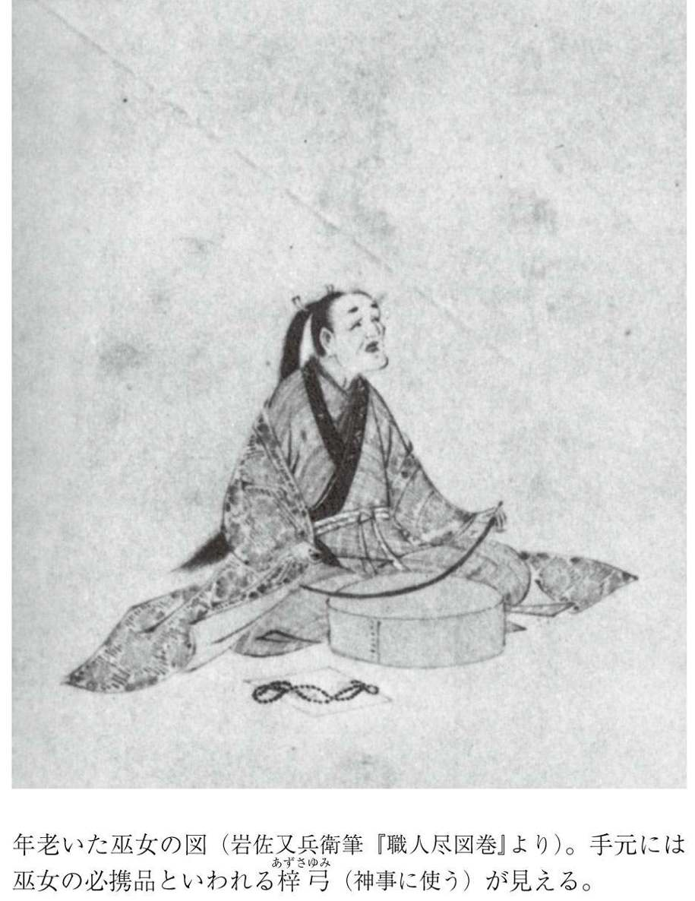
わが子よ
わが子よ もう二十にもなったろう
競馬競輪 マージャン パチンコ
わが子ならば 勝たせたく思うのは 親心
住吉の神さま 八百万の神さま
わが子に なにとぞ ラッキーを
【原歌365】
わが子は二十に成りぬらん 博打してこそ歩くなれ
国ぐにの博党に さすがに子なれば憎う無し
負い給うな 王子の住吉西宮
【異訳】
おらのむすこは 二十ちょうどになったげな
バクチばかりして歩くのさ
津々浦々の バクチやさん
さすがにおらの子なれば 憎さは憎し いとおしや
たまにゃ 勝たせておくれよ
王子の神さん 住吉の神さん
この老女は、二十歳の息子を持った母親である。ぐれた息子は博打打ちの仲間になり、博徒としての渡世を送っている。あっちこっちの賭場で、勝ったり負けたりしているのだろう。博打打ちの見習いだといっても、やはり息子だから、たまには勝たせてやりたいものだ。それで老母は、息子に博打で勝たせてくれるようにと、王子、住吉、西宮の神さまに祈るのである。いずれも、霊験があらたかであり、職能神的なところがあり、芸能や芸事の祈りに効能があった。
なお、【17】のところでも書いたとおり、博打は、当時は「芸能」の一種と見なされていた。『新猿楽記』では、さまざまな芸能を列挙したなかで、「博打」をれっきとした芸能あるいは神事としている。おみくじや、江戸時代の富くじ（今の宝くじ）が神社仏閣で興行されていたように、信仰はギャンブルと相性がいいのである。
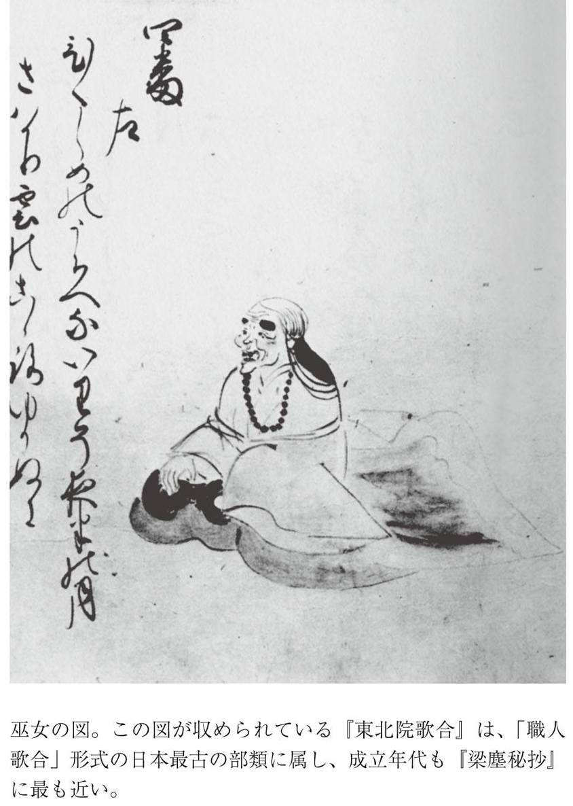
おらの子どもは
おらの子どものありさまは
長男 博打で負けばかり 勝ったためしなく 金もなし
次男の坊主は いまだに夜遊び 夜歩き
娘は ぐうたら 心も身にも しまりなし
なんと わびしい ババの身の上か
【原歌366】
嫗の子どもの有様は 冠者は博打の打ち負けや 勝つ世なし
禅師は 夙きに夜行好むめり
姫が心のしどけなければ いとわびし
【363】から【366】の四首は、老母が息子や娘を持ったゆえの嘆きをうたったものだ。この老女は、二人の息子と一人の娘を持っているが、その出来の悪さを嘆いている。長男の息子はヤクザな博打打ちとなっているが、負けてばかりで勝った例しがない。いつもピイピイして、母親から金を巻き上げては、なくしてくるのだろう。次男はまだ夜遊びが好きな年頃で、女遊びを覚えて、家にも居着かない。娘はだらしのない性格で、男出入りの絶え間がない。
そんな子どもたちであっても、老母にとっては腹を痛めた可愛い子どもだ。占いの客や博打打ち仲間にいたぶられたり、女や男にだまされたりするようなみじめな目に遭わないようにと、母親は神仏に祈るのである。
『聖書』の放蕩息子の話と同様に、子どもが育ちきって親元にあまり寄りつかなくなる。（遠くに離れた）老いたる母親（父親）の心情は、古今東西、変わらぬものと思われるが、それにしても三人とも出来が悪いのは、やはり育った環境が悪かったのかもしれない。母親も、それを自業自得と諦めている感も、なくはないのである。
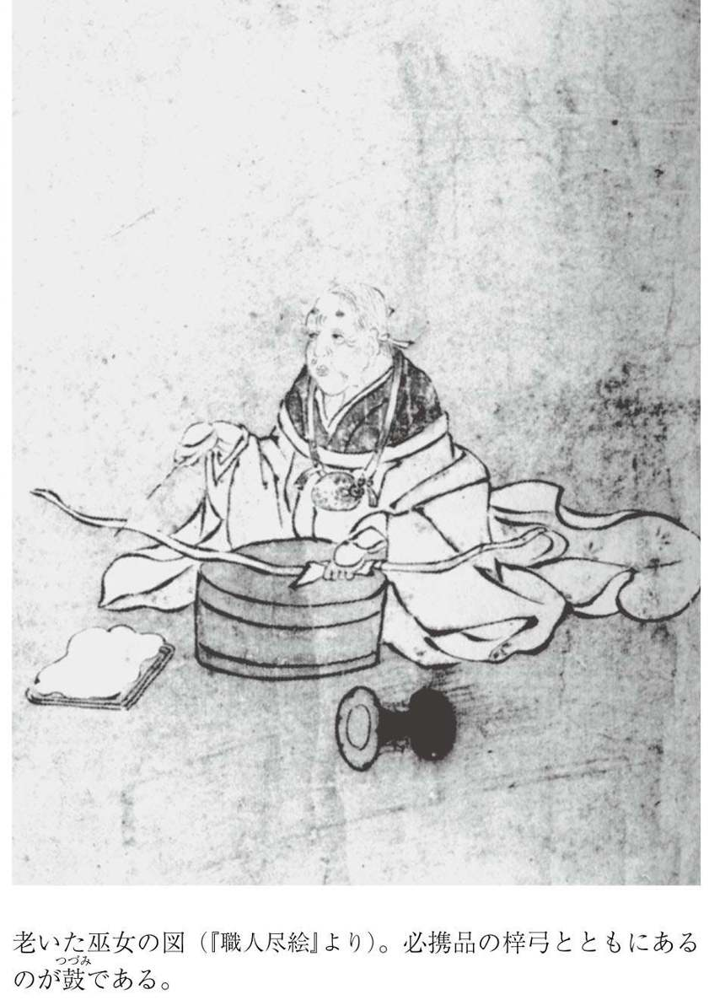
清太の造った 草刈る鎌は
何で研いだか 焼きを入れたか
捨ててしまおうと 思うたが
逢坂 奈良坂 不破の関
栗駒山でも 草も刈れない鎌なんて
【原歌370】
清太が造りし刈鎌は 何しに研ぎけん焼きけん造りけん 捨てたうなんなるに 逢坂奈良坂不破の関 栗駒山にて草もえ刈らぬに
清太という男の造った草刈り鎌がナマクラで、使い物にならないという内容の歌だが、これは平家の政権を批判する意味があるとする解釈がある。平家のナマクラ刀、それが〝清太（＝平清盛か？）〟の持っている兵力であり、武力であって、逢坂の寺法師、奈良坂や栗駒山の奈良法師たち、不破の関の源氏の勢力などの武装勢力を鎮圧できない、つまり〝草もえ刈〟れない、というのである。
これとは別に、この鎌を清太の持ち物＝男性のシンボルと解する説もある。逢坂にも奈良坂にも不破の関にも、男たち（特に武士や僧兵）のいる所には歓楽街（色街）があることは、今でも「基地」の街を見れば一目瞭然で、清太のモノでは、そんな海千山千の女たちの下半身（＝草）も刈れないのである。
清太が造った お屋敷の畑には
苦瓜 甘瓜が生っているかな
アコダ瓜もあれば
千の枝に刺せ 千生りヒョウタン
物をいうでない えぐい茄子
【原歌371】
清太が造りし御園生に 苦瓜甘瓜の生れるかな 阿古陀瓜 千々に枝させ瓢 物な宣びそ蘞茄子
【370】の解説のように、「清太」が平家の勢力を象徴する人物だったとしたら、これも平氏の政権を揶揄したり、批判した歌であると考えることができるだろう。苦い瓜や甘い瓜、千生りヒョウタンは、後の豊臣秀吉の旗印だが、勢力が四分五裂することを示しているのか。「物な宣びそ蘞茄子」というのは、茄子を女性の象徴としたら（次の【372】を参照）、平氏の一門の女性たちの政治への口出しをとがめた意味と解することもできる。
だが、これもやはり、「清太」のセックス・ライフをうたったものとの解釈が可能だろう。瓜や茄子は清太の妻や妾の象徴なのである。
熟れすぎたトマトは どうしよう？
採らずにいたら 真っ赤に膨れ
今にも 皮は破れて 流れ出しそう
はてさて 採って 棄ててしまおうか
いやいや 置いとけ 置いとけ
種さえ採れれば 役に立つ
【原歌372】
山城茄子は老いにけり 採らで久しくなりにけり 赤らみたり
さりとて其れをば捨つべきか 措いたれ措いたれ 種採らん
原歌の「山城茄子」というのは、よくわからないが、（京都近くの）山城地方で採れる茄子ということだろう。その形状や色艶から、この歌が、野菜のことをそのままうたったものとは思われない。民謡調だが、卑猥な意味が込められているのではないか。老人のしなびたふぐり（睾丸）を、茄子に喩えているのではないか。色艶も悪くなり、赤黒くなっている。もうものの役に立たないから、捨ててしまおうか。いやいや、まだ〝種〟を採るには使えそうだ。そうした猥歌とも読める。しかし訳歌では逆に、女性のものと連想してみた。赤くて、柔らかくて、汁気たっぷり。時々、赤い汁を垂らす（書いている私ですら、顔が赤らむほど、ひどく卑猥だ）。
京より 下った人形遣い
淀川べりに 家建てて 女といっしょに住んだはいいが
愛想尽かされ 捨てられた
情けないぞや キューピッド
花の都に 帰るとは
【原歌375】
京より下りしとけのほる 島江に屋建てて住みしかど そも知らずうち捨てて
いかに祭れば百大夫験なくて 花の都に帰すらん
一句目の「とけのほる」が未詳の語彙で、難解歌のひとつ。これを「でくのぼう（木偶の坊）」と解し、傀儡子すなわち人形遣いとした。二、三句も意味が取りにくいが、淀川べりの遊女の集まる場所に家を建て、そこでいっしょに暮らしたが、破綻して女は京へ行ってしまった、と解釈した。「百大夫」は遊女の守り神で、大江匡房の『遊女記』には「殊事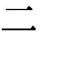百大夫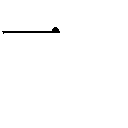、道祖神之一名也」とあるから、陽根を刻んだ柱（こけし状）のような形と考えられる。【380】には、「遊女の好むもの」として「男の愛祈る百大夫」とあるから、大きなものは道祖神として路傍に祀られ、小さなものは「金精様」として遊女の家や部屋に祀られていたと思われる。『傀儡子記』にある百神も、同様の神と考えられる。
楠葉の御牧の土鍋造りの娘
土鍋は造っても 器量良し
鄙にはまれだと 男たちには 大評判
なんと 可愛く 愛らしい
嫁入り道具を 愛嬌手車に積み込んで
乗せてやりたや お大臣さまの 玉の輿
【原歌376】
楠葉の御牧の土器造り 土器は造れど女の貌ぞよき あな愛しやな
あれを三車の四車の 愛敬輦にうち乗せて 受領の北の方と言わせばや
「楠葉」も「御牧」も地名（現・大阪府枚方市）。そこで造られている土器は粗製品で、土器造りの職人というのも、かなりの下層階級ということだった。その下層民の娘が素晴らしく美人である。その美貌を元手に、彼女だったら身分の高い人の奥さんにもなれるだろう。憧れと讃、そして、ちょっぴり混じった嫉妬とやっかみと諦め。所詮、庶民の男たちの気持ちも、複雑なのである。
この尼めは こんなナリを しておりまするが
大安寺の 一万法師は 妾の伯父でござります
甥もおります 東大寺で修行した 子どもも 一人おりまする
雨降り模様のお天気で ございましたので
濡れるのを惜しみ こんなボロを着てまいったので ござります
（どうか お恵みのほどを お願い申し上げまする）
【原歌377】
尼は斯くこそ候えど 大安寺の一万法師も伯父ぞかし 甥も有り 東大寺にも修学して子も持たり 雨気の候えば 物も着で参りけり
『新猿楽記』に「妙高尼が襁褓乞い」という芸能名がある。本来、子どものいるはずがない尼さんが、赤ん坊の襁褓洗いをするというパフォーマンスであると思われる。それとは別に、尼姿の乞食芸のようなものがあったのではないだろうか。原歌は、こうした尼の乞食芸の口上ではなかったかと考えられる。ボロは着てても心は錦ではなく、精一杯、自分の身なりの貧しさを言い訳しようとしている老婆なのである。言葉遣いの丁重さが、落魄（落ちぶれること）する前の、昔の老婆の身分を示していて、哀れなのである。
遊びオンナの 好きなもの
ブルース演歌に ドラムのピッチ
ボートのデートに 大きなパラソル 女の舟漕ぎ
オトコを手招くキューピッド
【原歌380】
遊女の好むもの 雑芸 鼓 小端舟 簦翳 艫取女 男の愛祈る百大夫
「遊女」の「好むもの尽くし」。実際は「好むもの」というより、その商売上必要不可欠なアイテムを挙げたものだ。「雑芸」は『梁塵秘抄』に集成された歌謡の類を指し（現存はしないが、『雑芸集』という歌集の存在が知られている）、鼓はその伴奏用。「小端舟」は、遊女たちが小さな端舟に乗り、男の客のいる客船に漕ぎつけるもので、大きなカザシの傘や「艫取女」は、その舟に必要なもの。「男の愛祈る百大夫」は、遊女の守り神としての神のことだが、男性器を象った木彫りのものだと考える。後世には、金精様として娼家に祀られた。「百神」ともいい、道祖神の性格があったと考えられる（朝鮮の長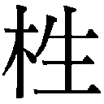のように、村の境界に立てたのだろう）。和泉式部と道祖神とのエロチックな話が、『宇治拾遺物語』にあるが、端的にいうと、女陰と男根そのものの出会いである。
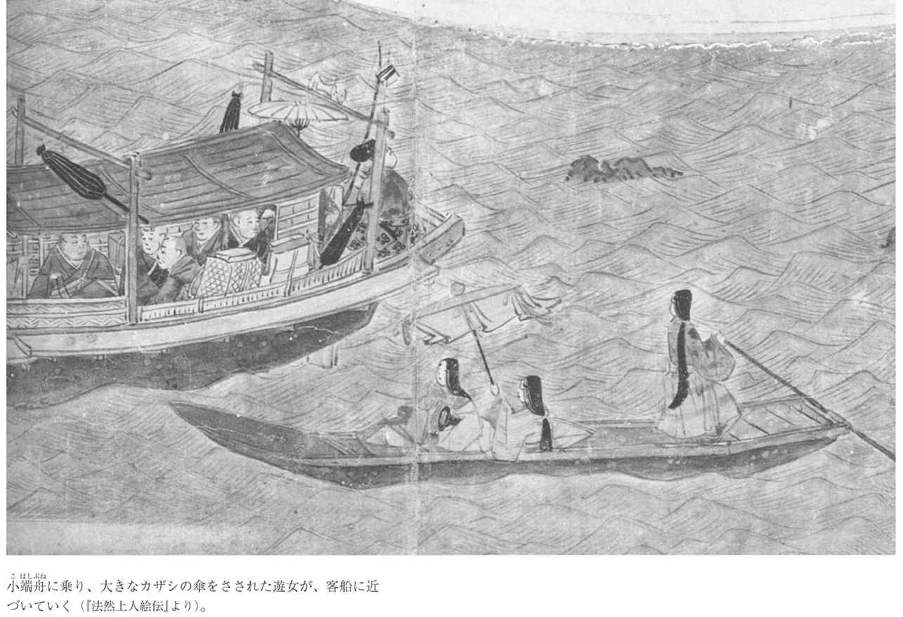
筑紫の湯には お湯のなかにも秩序あり
一番最初は お役人（高級官僚）
二番は お坊さん
三番 神主
四番 四天王寺の堂守
五番は 武士で
六番 大宰府勤めの料理人
七、九、八丈、九番は警備のガードマン
十番 国分の武蔵寺
夜更けにゃ 過去の亡霊たちが ぞろぞろと
ありがたや ありがたやの お湯供養
【原歌383】
吹田の御湯の次第は 一官二丁三安楽寺 四には四王寺五侍 六膳夫 七九八丈九傔仗 十には国分の武蔵寺 夜は過去の諸衆生
吹田の湯とは、現在の福岡市二日市にある温泉「筑紫の湯」のことという。昔は温泉に入るにも、秩序や順番があった。「二丁」の「丁」は「寺」の誤写とされる。「三安楽寺」は、天満宮の神官たちを監督するお寺で、「二」が寺で、「三」が神官と解した。「四」は、四天王寺で、四という字面からそのまま連想されたのだろう。「五」の「膳夫」は、大宰府の料理人で、結構序列は高かったのである。「七九」と続いているのは、次の「八丈」を活かすためだろうが、意味は不詳である。「九傔仗」も不明だが、六（九？）尺棒を持った門番ということか。「十」は筑紫野市の薬師を本尊としたお寺だが、次の「過去の諸衆生」、つまり死者たちを呼び起こすために、医療の仏さまである薬師をここに持ってきたものか。それにしても、昼は厳しい階級社会の現実を表し、夜は死者たちが集まってお湯に入っているという想像力は、現代人のそれの範囲を超えている。
蛇足だが、私も二日市温泉には入ったことがある。広い湯船でゆったりと、地元のおじいさんから、昔話を聞かせてもらったのだが、ひょっとしたら、あのおじいさんも「過去の諸衆生」の一人だったのでは！ 夜中の温泉ではなかったのだが。
世間で 憎しみ かうものは 坊さんの乗るスポーツカー
これみよがしに 窓開けて スピード風に口開けて
もっと憎しみかうものは
白髪頭の年寄りの ギャルの追っかけ
姑ババアの やきもちやき
【原歌384】
娑婆にゆゆしく憎きもの 法師の焦る上馬に乗りて 風吹けば口開きて 頭白かる翁どもの若女好み 姑の尼君のもの妬み
いつの時代にも、白髪のじいさんが、若い娘を好むということがあったようだ。私が一度だけ会った人物だが、若い女性といっしょにお風呂に入ると、その若い女性のエキスがお湯にしみ出て、若返りがはかられると、真顔で説明する日本人の老人がいた。
韓国で〝キーセン遊び〟をしていて、あなたの子どもができたと女にいわれ、どうしたらいいものかと、私のところに相談に来たのである（なぜ、私のところにそんな相談を持ち込んできたのかが分からない。新聞で私が韓国のことを書いた記事を読み、頼りになる人物と見込んだのだろうか）。まず、本当にあんたの子かどうか、確認したほうがいいんじゃないですかと、私は冷たく答えた（その老人は七十過ぎで、老妻との間に子どもはできなかったという）。「頭白かる翁どもの若女好み」という言葉を見て、すぐにその老人のことを思い出したのである。その後、老人からは、何の報告もない。
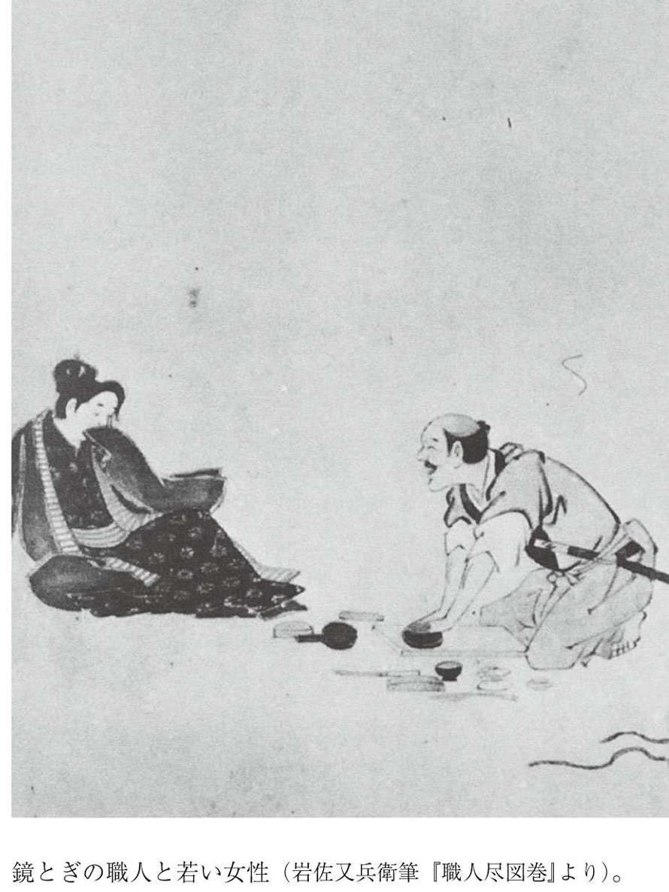
カラスは 見れば見るほど 真っ黒だ
サギは 年は取っても いつでも真っ白
カモの首が 短いからって 継ぎ足すわけにはいかないさ
ツルの脚が 長いからって切れないように ね
【原歌386】
烏は見る世に色黒し 鷺は年は経れども猶白し 鴨の首をば短しとて継ぐものか 鶴の脚をば長しとて切るものか
烏の黒と鷺の白、鴨の首の短さと鶴の脚の長さを対比させて、それぞれがそれぞれの性質を持っていることを納得させるという機知的な要素に富んだ歌謡である。〝白い烏〟を捕まえろとか、〝脚の短い鶴〟を探せ、といった無理難題をふっかける為政者に対する、庶民の抵抗の歌ととらえることも可能かもしれない。
鳥のなまえを 数えれば
一は 暁告げる一番鶏
二は 鶏に
三は 鷦鷯
四は 四十雀
五は 五位鷺で
六は 椋鳥
七は 七面鳥よ
八は 蜂雀
九は 九官鳥で
十は 十姉妹
これでおしまい
オオトリは まさに鴻
【原歌387】
小鳥の様がるは 四十雀鶸鳥燕 三十二相足らうたる啄木 鴛鴦鴨鴗鳰鳥川に遊ぶ
これは訳というより、原歌に触発された私の創作である。一から十とトリ（最後）までを鳥の名前で並べてみた。「一番鶏」というのは、鳥類の名前ではないが、思いつかなかったので仕方がない。七面鳥や九官鳥は、日本の鳥ではないので、除外したかったが、これも代わりの鳥名が思いつかなかった。
淀川あたりの河口を 角を並べて 牛たちが渡ってゆくよ
大きな 立派な おとうさん牛 その後ろには
おかあさん牛と ちっちゃいけれど 男の子牛
背中にマダラ模様の 女のあかちゃん牛も 今 行くよ
【原歌390】
淡路の門渡る特牛こそ 角を並べて渡るなれ 後なる女牛の産む特牛 背斑小女牛は今ぞ行く
「淡路の門」というのは、淡路海峡のことではなく、淀川下流の淡路荘のことだという五味文彦氏の説がある（『梁塵秘抄のうたと絵』）。淡路海峡を牛たちが渡ってゆく、あるいは船で運ばれてゆくというこれまでの解釈には、確かに無理があった。ただ、現実の情景をうたったものか、それとも別の何かを寓意したものなのか、よく分からない。親牛に連れられて、子牛までもが次々と川を渡ってゆく情景はリアルなものに思えるが、こうした牛の川渡りということに、どんな意味があるのかが分からない。都ではあまり見られない、珍しい情景をうたったということだろうか。
若いイバラのヤブの下
イタチはフルート
サル ダンス
バッタくんのバック・コーラス リズムとり
そらそら コオロギ ティンパニー
【原歌392】
茨小木の下にこそ 鼬が笛吹き猿奏で かい奏で 稲子麿 賞で拍子つく さて蟋蟀は 鉦鼓の鉦鼓の好き上手
虫の声や動物たちのしぐさを楽器に見立て、童謡風にうたったもの。イタチのフルートは、イタチが後ろ足で立ち、前足を胸の前に垂らした恰好か。サルのダンスはそのまま。バッタは集団での秋の夜長のバック・コーラス。この場合のバッタは、「イナゴマロ」、つまりイナゴのこと。コオロギの鉦鼓は、西洋楽器ではトライアングルかもしれないが、少し無理のようだがティンパニーとした。チェリッシュの歌った『てんとう虫のサンバ』のノリで歌いたい。
『鳥獣戯画』にも、イタチが笛を吹き、サルが踊り、ウサギがうたうような、関連した図がある。画法の洗練の度合いは別にして、ベトナム、中国、朝鮮の民画に、こうした擬人化した動物たちの絵が多く見られる。
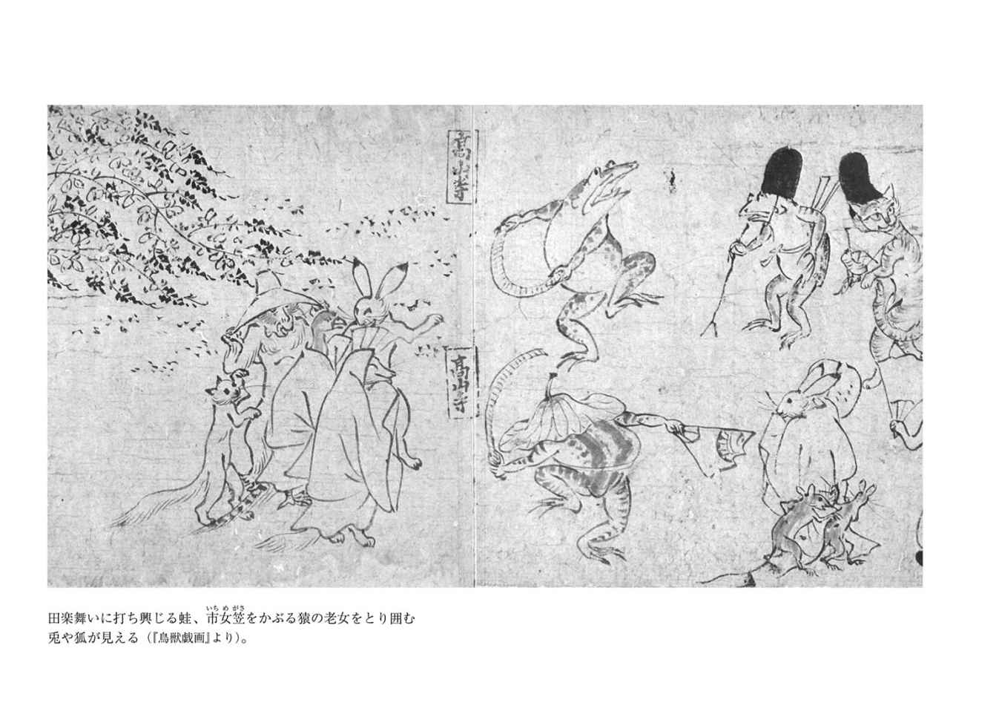
「あそこに立っているのは、ありゃ誰だ？」
「稲荷の下社の神主の息子様さ」
「ほんとの総領息子か？」
「朝っぱらから 急に 護衛の兵士に駆り出されたのさ
残りのみんなを平安に守れとね」
【原歌393】
彼処に立てるは何人ぞ 稲荷の下の宮の大夫御息子か 真実の太郎なや 俄にあか月の兵士に付い差されて 残りの衆生達を平安に護れとて
稲荷の下社の神主の総領息子が、一年間、都の警備にあたる「兵士」に任命されたのである。二人の人間の会話体でうたわれていて、「真実の太郎なや」とびっくりしている様子がうかがわれるから、神職の長男が「令」によって召集されることはあまりなかったのかもしれない。「残りの衆生達を平安に護れとて」というのは、この歌に、神仏の加護を求める意味合いがあるとも思われるが、それがリアルな社会状況と、どう関わるのかは分からない。
ピチピチギャルは 十に プラスの四、五、六
レディの盛りは 二十三、四まで
三十四、五にもなったなら
きいろい紅葉の 枯れ落葉
【原歌394】
女の盛りなるは 十四五六歳廿三四とか 三十四五にし成りぬれば 紅葉の下葉に異ならず
もちろん、中世は太陰暦で、数え年だから、満年齢では、さらに一歳ほど若くなる。満十三歳から二十三歳までが、本当の「女の盛り」ということだろうか。女子高生、女子大生がモテはやされるはずである。だが、当人たちはあまりそんなことを意識はしていないようだ。あたら「女の盛り」を、粗雑に過ごす女性も少なくない。地味で、ぶかっこうな制服を強制する高校や、華美な服装を規制する大学などがいけないのか。「ピチピチギャル」というのは、もはや当世風（今様！）ではないかもしれない。風俗語は、かくも素早く廃れるのである。
エビ取りおじさん どこ行くの？
ザコ取りおじさんとこに 行くとこさ
この江にゃ エビはいないよ やめときな
あの江の ザコが散らぬ間に
【原歌395】
海老漉舎人はいづくへぞ 小魚漉舎人がり行くぞかし この江に海老なし下りられよ あの江に雑魚の散らぬ間に
別に海老取りの漁師や小魚取りの漁師のことをリアリスティックにうたった歌ではない。安来節の泥鰌すくいのように、手足を使った踊りの所作に合わせてうたわれたものだろう。『新猿楽記』に「延動大領之腰支。漉舎人之足仕」という猿楽の芸能が描かれているが、その水中での（仮想の）足さばきが面白おかしい所作となっていたのだろう。手には、魚や小エビを掬うザルやタモのようなものを持っていたのかもしれない。ピチピチと飛び跳ねるエビや小魚を、あわてて捕まえるような仕草もあったのだろう。
男を待ってる女たち ほんとに みんな男好き
カヨコに イヨコに カズコかな
赤い口元 光らせて 夢が破れそうな 路地に立つ
可愛いあの子の アソコが濡れる
【原歌398】
男を辞せぬ人 賀茂女伊予女上総女 はししあかてるゆめなえの辻子の人 室町辺のあこほと
遊廓のある辻に立っている遊女たちのことをうたったものか。沖縄の那覇にある遊廓は〝辻〟というから、〝辻子の人〟とは、遊女たちのことを意味するのだろう。賀茂、伊予、上総はそれぞれ居住地や出身地にまつわる呼び方だろう。「はししあかてるゆめなえ」という言葉は、未詳だが、『新日本古典文学大系』本の仮説に基づいて「口元が赤く輝く、夢が萎える」と解釈した。「あこほと」も未詳だが、「吾子のほと（女陰）」と解した。「はししあかてるゆめなえ」「あこほと」、意味は正確にわからなくても、何ともエロチックな感じがする。
隣の家の姉娘は カミさま頼りの バカ娘
頭にゃ 縮れガミ
櫛も通さぬ 乱れガミ
額に垂れる額ガミ
ブキッチョ 指先は 手筒ガミ
フラフラ ブラブラの 家出を誘う
足の裏には 歩きガミ
【原歌402】
隣の大子が祀る神は 頭の縮け髪 十寸髪 額髪 指の先なる手筒神 足の裏なる歩き神
なぜ、隣の家の長女を、こんなに悪くいわなければならないのか、今ひとつ疑問だが、姿も悪く、身持ちも悪い若い女性というのも、昔からいるもんだなと、ちょっと感心してしまうような気になる。「手筒神」とか「歩き神」とか、厄介な貧乏神には取り憑かれたくないものだ。家出をして、遊女や傀儡女の仲間にでも入ってしまうのだろうか。
手先が不器用なのも、放浪癖があるのも、遊女にとっては問題にならないのであるから。
踊れ 踊れよ カタツムリ
踊らぬものなら 馬の子や牛の子に
蹴らせるぞ 踏みつぶさせるぞ
とってもじょうずに踊ったら 華の園で遊ばせよう
【原歌408】
舞え舞え蝸牛 舞わぬものならば 馬の子や牛の子に蹴えさせてん 踏み破らせてん 真に愛しく舞うたらば 華の園まで遊ばせん
カタツムリのことを、地方によっては「マイマイ」と呼ぶのは、ひょっとしたらこの歌謡から来ているのかもしれない。「舞え舞え」の歌の文句が、「マイマイ」と訛り、やがてカタツムリの異名になったのでは、と考えると面白い。俗称の「デンデンムシ」は、その角を振る動作が、「デンデン太鼓」を振るしぐさと似ているところから、連想されたのではないだろうか。いずれにしても、日本の子どもたちには、「カタツブリ」「カタツムリ」は、ずっと昔から親しいものだったのである。
頭で遊ぶのは 虱です
ボンノクボにて 囓ります
櫛の歯より 天降り
麻小笥の蓋で 潰されて
さて 一巻の終わり です
【原歌410】
頭に遊ぶは頭虱 項の窪をぞ極めて食う 櫛の歯より天降る 麻小笥の蓋にて命終わる
虱の一生を荘重にうたったものである。人の頭で遊ぶ虱は、首筋の後ろのボンノクボのところを好んで囓る。人間の体の中で、もっとも柔らかいところだからだ。だが、櫛の歯という天敵がいる。櫛で搔き落とされる。これを天降りと称する。天降った虱を、素早く、そばにある麻小笥の蓋でプチッと潰す。あわれ、虱の短い生涯はそこで終わりを告げるのである。「麻小笥」というのは、縒った麻糸を入れておく器で、櫛とともに、婦人の身近にあるものということだろう。昔は、虱は歯で嚙み潰したりしたようだ（『古事記』に見られる表現）。私の子どもの時代は、姉妹たちは爪に挟んで潰していた。
越の国の 白山お山の シラヤマヒメは
いつ見ても 美しい
夏でも冬でも 雪が降る
駿河の国の 富士のお山の コノハナサクヤヒメは
いつ見ても 恐ろしい
夜でも昼でも 煙が立つ
【原歌415】
是より北には越の国 夏冬とも無き雪ぞ降る 駿河の国なる富士の高嶺にこそ 夜昼とも無く煙立て
白山も富士山も、山岳信仰の山である。白山には白山比咩、富士山には木花咲耶姫という女神がいる。比叡山麓の日吉神社の摂社である白山社には、夏でも屋根の上に雪が降ったという伝説があるから、「夏冬とも無き雪ぞ降る」というのは、この白山信仰のことを意味しているのだろう。いくら、北方にあるとはいえ、「越の国」でも、夏に雪は降らない。富士山は、『竹取物語』の末尾で知られているように、古代は噴煙を上げる活火山だった。当時は四六時中、煙が絶えなかったのである。
心さびしく思うもの 夜道 船路 旅の空
旅の宿にも さびしさ つのる
暗い森のなかで 聞こえる 山寺の ナンマンダブ
心ならずも 別れたふたりの 恋のゆくえ
【原歌429】
心凄きもの 夜道船路 旅の空 旅の宿 木闇き山寺の経の声 想うや仲らいの飽かで退く
「心凄きもの」の列挙である。心細い、気味が悪いという意味だが、「心さびしい」と訳してみた。最後の「想うや仲らいの飽かで退く」が〝要〟となっているのだが、それまでに心さびしさを実感させる夜道や船旅や旅の宿が出てきて、そのさびしさ、わびしさをいっそう募らせてゆくのである。森のなかで聞くナンマンダブといった念仏や読経の声は、心さびしいというより、不気味で、怖いと思う。ただし、「読経」というのは当時は芸能の一種とされた。
山は山でも ちょっと変わった山ならば
雨山 守山 しぶき山
鈴が鳴らない 鈴鹿山
播磨の明石のこちらにある
潮垂山こそ 変な山
【原歌430】
山の様がるは 雨山守山しぶく山 鳴らねど鈴鹿山 播磨の明石の此方なる 潮垂山こそ様がる山なれ
「様がる」とは「興がる」と同じような言葉で、一風変わった、といったような意味で『梁塵秘抄』の歌謡のなかでは、わりと頻繁に使われる口語的用法である。「雨山守山しぶく山」というのは、一般的な名称が固有名詞となっていることを「様がる」のだろうか。鈴がないのに「鈴鹿山」というのとは、少し発想が違っているようだ。播磨の明石の「潮垂山」というのは、不明だが、「しおたれる」、すなわちガッカリする、元気がない、といった意味の名前なので「様がる」のだろうか。あるいは、塩田の塩の山を意味し、盛塩のようなものを「潮垂山」と称したのかとも思われる。
ほらほら トンボ こっちの水はしょっぱいぞ
じっとしてれば 笹竹の先に 馬のしっぽの毛を むすびつけ
それでしばって くるくると 回して 子どもに遊ばせろ
【原歌438】
いよいよ蜻蛉よ 堅塩参らんさていたれ 働かで
簾篠の先に馬の尾より合わせて かい付けて
童冠者ばらに 繰らせて遊ばせん
トンボのお尻を糸で縛り、そのまま飛ばせるという遊びは、子どもの時によくしたものだ。中世の子どもたちも、そんな同じような遊びをしていたのである。ただ、私の子どもの時は、ホタルやコガネムシを呼ぶ時には、甘い砂糖で釣ったものだが、中世では塩味で釣ったらしい。昔は、甘いものなどなかったし、塩が貴重品だったからか。
「童冠者ばらに 繰らせて遊ばせん」というからには、この歌の主体は大人のようだが、子ども自らが「童冠者ばら」と称していると考えてもいいだろう。
「さあ コマさんよ ゆこうよ
鳥羽の鎮守のお祭り見物に」
「いやいや わたしゃ ゆかないよ こりごりなのさ
人のこみあう 四つ辻で 蹴られ踏まれ つぶされる
じゃじゃ馬ほど こわいもんはないさ」
【原歌439】
いざれ独楽 鳥羽の城南寺の祭見に われは罷らじ恐ろしや
懲り果てぬ 作り道や四塚に 焦る上馬の多かるに
独楽廻しの時の「遊び唄」だろう。平安朝時代にも、男児の遊具として「独楽」があり、それで遊ぶ時のはやし唄がうたわれていたのである。「コマ、コマ、回れ、ブンブン、回れ」などという近代の童謡は、昔よりかなり退化したものといえる。お祭りの雑踏の路上では、子どもたちも、おちおちと独楽廻しの遊びができなかったと思われる。もっとも、独楽遣いは、遊戯とは限らず、芸能としても成立していた（次の図を参照）。
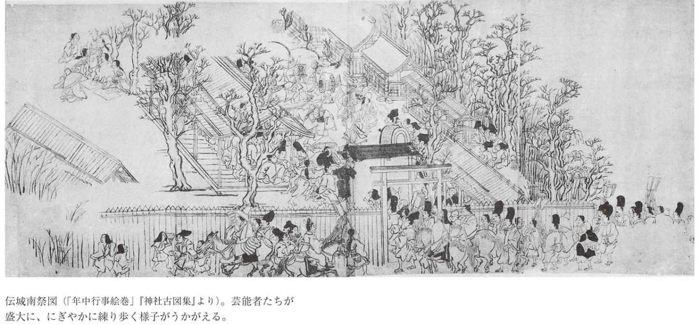
恋しくて 恋しくて
ようやく逢えた
その夜の夢は 何を見る
さしさしきしと
音のするまで抱きしめたい
【原歌460】
恋い恋いて たまさかに逢いて寝たる夜の夢は いかが見る
さしさしきしと 抱くとこそ見れ
【異訳】
恋しくて 恋しくて 逢えて寝る夜の夢の中
きしきしと ベッドも 骨も鳴るほど 抱かれたい
原本には「さしさしきし」とあって、「さしさし」とか「きし」というのが、どんな意味の擬態語、擬音語なのかよくわからない。強く相手の体を抱きしめることではあると思うのだが、「さしさし」は、腕をさしかわすとか、さしつさされつのような「さしさし」だろうか。『新日本古典文学大系』本では、「さしさし」は「きしきし」の誤写とある。「きしきしきし」は、体を「ぎゅぎゅ」と抱きしめる時の擬態語であるという。だが、私の「異訳」のように、「骨」が「きしきし」と鳴るほど強く抱きしめるというのはどうだろうか。あるいは寝台が鳴るのである。いずれも、激しいピストン運動である。
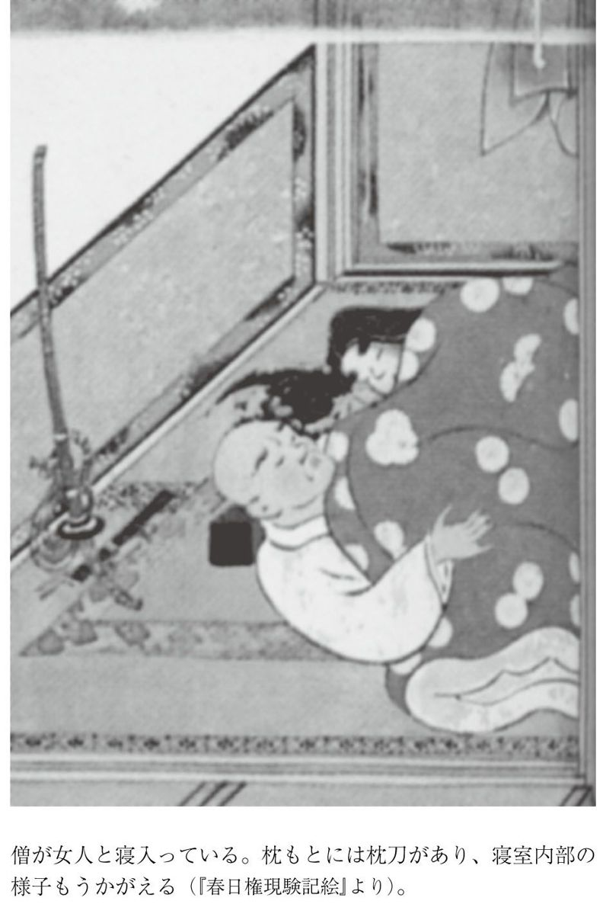
さあさ ツワリには カキが一番
カキはカキでも そんじょそこらのカキじゃない
広島湾は 瀬戸内の 長門の海の その浦の
岩にへばりついたる カキ殻を
ガキガキと こじりとったるこのカキよ
こいつを食べれば そんじょそこらのガキとは違う
英語もペラペラ 算数も国語も百点満点
トビがタカを生んだような びっくりするほど男前の
立派な男の子が 産まれるよ
【原歌461】
択食魚に牡蠣もがな 唯一つ牡蠣も牡蠣 長門の入海の其の浦なるや 岩の稜に着きたる牡蠣こそや 読む文書く手も八十種好 紫磨金色足らうたる 男子は産め
ツワリの時は酸っぱいものが食べたくなるというが、この場合、酢ガキというところか。広島産のカキは、この当時から有名だったのだ。調子がいいので、カキのたたき売りの口上として訳してみた。ただし、当時はたたき売りで売るような、そんな庶民的な食べ物ではなかったと思われる。
ただ、フランスでは、カキの季節になると、屋台にカキを積み、バナナのたたき売りのようにカキを売って、その場で食べさせる。そんな光景をイメージしている。原歌は、優秀で立派な男子の出産を予祝する歌だろう。
わたしの恋は 片思い
伊勢の海に 朝にも 夕にも 漁どる海人が
海から 採り上げる アワビみたいに
【原歌462】
伊勢の海に朝な夕なに海人の居て 採り上ぐなる 鰒の貝の片思いなる
「磯（伊勢）のアワビの片思い」という成句を引き出すためだけの歌。古代からアワビ、干しアワビは、神に捧げる神饌として欠かせないものだったが、それはアワビが女陰を連想させることからの呪術的な意味であったのだろう。「若布」とか「昆布（喜ぶ）」とか「数の子」など、こうした語呂合わせ的な呪術性によって、お正月などの神饌物とされてきたのである。だが、アワビの意味は、ワビしい片思いと相場が決まってゆく。
雨の降る夜に 別れたの
帰る道には 傘もなし
コートもなしに 濡れるまま
無情の人は 通り過ぐ
ホテルの 灯りも 消えたまま
【原歌467】
雨は降る去ねとは宣ぶ笠は無し 蓑とても持たらぬ身に 忌々しかりける里の人かな 宿貸さず
原歌は、旅する人が雨に降られ、雨宿りを所望しても、「行ってしまえ」と追い出され、笠もなく、蓑もない身をわびしく思う状況をうたっている。冷たい村の人々は、そんなわたしに一夜の宿さえ貸してくれない。中世の旅人の困難を彷彿とさせる内容だが、歌そのものは、猿楽などの芸能のパフォーマンスを伴ったものだろう。笠もない、蓑もない、宿も借りられない、という弱り目にたたり目という所作を、むしろ滑稽に演じて、見物客の同情と笑いを誘ったのではないだろうか。
山伏の 腰につけた 法螺貝が
丁と落ちて
丁と割れた
ああ 砕けてものを思う頃かな
【原歌468】
山伏の腰に着けたる法螺貝の 丁と落ち ていと割れ 砕けて物を思う頃かな
「神仏習合」は、また修験道の謂いでもある。山伏＝修験者に法螺貝はつきもので、総髪で一本足の高下駄の姿は、やがて「天狗」という魔物となった。これはそんな山伏をからかう歌。
訳といっても、原歌とほとんど変わらないじゃないかといわれそうだが、この歌の「丁」と「てい」という擬音語、さらに「砕けて物を思う頃かな」という下句の発想の転換の鮮やかさは、なまじの現代語訳を拒むのである。それで、上句と下句の間に、ただ「ああ」と入れただけが私の工夫である。
津軽から 嫁御欲しさに
昨夕来ただが
一張羅の 紺の背広を売った この銭コで
誰か嫁御を売らんべか？
【原歌473】
東より昨日来れば妻も持たず この着たる紺の狩襖に女換えたべ
『新猿楽記』に「東人ノ初京上り」という芸能の名前がある。田舎言葉丸出しの「東男」（関東から東北にかけての広い地方を「東」といった。今の東日本という言い方と重なるかもしれない）が京都に出てきて、嫁さんを売ってくれというのである。「この着たる紺の狩襖に女換えたべ」というのだから、着物を脱いで、裸になるような芸能だったのかもしれない。東北の平泉にある毛越寺の「延年」の芸能に、「東男の京上り」というのがあり、その詞章が残っている。
こうした田舎者を嘲笑する、あるいは嬲りものにする芸能は、現代まで日本に連綿として続いている。それを逆手にとって、吉幾三や千昌夫などのように「東北の田舎者」を売り物とする芸能人もいるのだ。思えば、きわめて古い、伝統的な芸風なのである。
も一度 抱いて 夜が明けても このままで
鳥が啼いても 鐘が鳴っても
きのうの夜からの ベッドのなかで
二人の愛は 飽き足りない
このままで このままに
【原歌481】
去来寝なん夜も明け方に成りにけり 鐘も打つ
宵より寝たるだにも飽かぬ心を や 如何にせん
かなり濃厚なベッド・シーンである。昨夜からベッドに入ったままなのに、明け方になり、お寺の鐘も鳴っているのに、まだ飽き足りない思いなのだ。「や 如何にせん」という言葉には、自分でも、さすがに「ちょっとやりすぎ」という気持ちがあるのだろう。ところで、これは男の側からだろうか、女の側からだろうか。原歌は男の歌のような気がするが、訳では女心の飽き足らぬ思いとした。特に、他意はない。
稲荷のお社の 三か所に棲む
浮気カラスたちは 哀しいね
昼は 睦んで 夜は ひとりね
【原歌514】
稲荷なる三つ群烏あわれなり 昼は睦れて夜は独り寝
稲荷社の門前に市をなす遊女たちを「群烏」と呼んだのである。「三つ」というのは、上社、中社、下社の三か所で、それぞれにそこを根城とする遊女たちがいたらしい。昼間は、客が来て賑わっていても、夜にはとんと客足がなく、独り寝のわびしさをかこつのである。
京都の伏見稲荷は、赤い鳥居のジャングルのような参道が有名だが、あまり人のいない時間に行くと、何か狐に化かされそうな、気味の悪い思いにかられるのは私だけだろうか。あの長い、鳥居の回廊を最後まで歩き通せた例しがない。
東京にゃ 女はおらへんの？
バーで となりに 坐ったのは
口紅 おしろい つけ睫毛の オカマちゃん
テレビをつけても ニューハーフ
女は どこへ消えはった？
【原歌556】
東には女は無きか男巫女 さればや神の男には憑く
降臨する神が憑くのは、日本ではほとんど女性だった。日本のシャーマニズム信仰に大きな影響を与えたと思われる朝鮮のシャーマンも基本的には女性である（巫堂＝ムーダンと呼ぶ）。ただし、朝鮮半島でも済州島では「神房＝シンパン」という男性シャーマンが巫儀（＝クッ）を行う。日本でも、地域、時代によって巫覡（巫は女性シャーマン、覡は男性シャーマン）の両方が存在していたと思われる。ただし、関東・東北でも、イタコ、イチコなどと呼ばれる梓弓（梓の木で作った弓で、巫女が神事に用いた）を使う梓巫女の系統を引くのは女性シャーマンだった。
奥山に しばし 流れる 楽の音よ
あれは 天稚御子の
奏でる音
奏でる音よ
【原歌561】
奥山に屢弾く音の聞ゆるは 天稚御子の召す音ぞよ 召す音ぞよ
山の奥深くに音楽が流れている。それは音楽を司る神であるアメワカミコの奏でる音楽だった。思えば「楽の音（音楽）」とは、とらえようとすればとらえられない一瞬の幻のようなものではないか。コトバは文字という「モノ」によってとらえられるが、声や音はそれを「モノ」としてとらえ続けることはできない。そうした「音（声）は幻である」という思想を奏でる「今様歌」を、私の『梁塵秘抄』の私訳の最後にふさわしい歌として、これで締めくくることにしよう。
昔から今にいたるまで、習い伝えてきた謡がある。これを神楽・催馬楽・風俗という。神楽は、天照御神の天の岩戸を押し開かせになった時代に始まり、催馬楽は、大蔵の省に、地方の国々の貢ぎ物を納めにきた民衆たちが口ずさんだ謡から起こっている。これは為政者にとって容易なことではなく、時の政治が良くあれ悪しくあれ、さまざまに褒められたり、貶られたりするということだ。催馬楽は、公共のものであっても個人的なものであっても、正しくうるわしい管絃の琴の音や、琵琶の糸、笛の音を伴って、我が国の音楽となったのである。これらは皆、天地を感動させ、荒々しい神を和めて、国を治め、人々に恩恵をほどこす謡となった。風俗は、朝廷で行われる舞楽の予行演習や、賀茂神社の臨時の祭の時に、これが用いられる。また、お正月に摂関家が、部下の者たちをもてなす時にも謡われたのである。近頃それは廃ってしまったようだが。
このほかに、習い伝えられる謡がある。今様という。神歌・物様・田歌にいたるまで、練習すべきものは多く、そのジャンルは広い。
用明天皇の御代に、難波の外交官宿舎に土師の連という者がいた。とても声のよい、謡の上手な人であった。夜に、家で謡をうたっていると、屋根の上で、その後に付けて謡う者がいた。怪しく思って謡をうたいやめれば、その声も止む。また、謡うと、その声も付いて謡うので、驚いて外に出てみると、逃げてゆく者がいる。追いかけてみれば、住吉の浦まで走ってゆき、水辺に入って消えてしまった。これは、熒惑星（火星を神格化したもの）が、彼の謡に感心して出てきたのだという。聖徳太子の伝記（２）に見られる話だ。今様というものの起源である。
私の今様修業時代
神楽・催馬楽・風俗・今様の起源から始めて、娑羅林・只の今様・片下・早歌の謡い方や、初積・大曲・足柄・長歌［娑羅林から長歌までは解説の２参照］を始めとして様々に声の調子の変わるような歌、田歌にいたるまで記録し終わったのである。このようなことは、誰がしても同じようなものではなく、それぞれに違っているはずなので、後には謗られることも多いのかもしれない。それは今からは分からないが、何とか古いものを記録して、ようやく九巻として選び終わったのである。和歌などの詠う歌には、「髄脳」とか「打聞」とかいう歌学書や歌論が多くあるようだが、今様についてはまだそうしたものがないので、藤原俊頼の「俊頼髄脳」に倣って、こうして選んでみたのである。
かれこれ、十何歳かの時から今まで、今様を愛好して、それを怠ったことがなかった。のんびりとした春の日には、枝に咲いて庭に散る花を見たり、鶯の鳴き声や郭公の語り合う声を聞いたりして、その歌の心を得た。蕭々とした秋の夜、月を玩び、虫の声に哀愁を感じ、夏の暑さ、冬の寒さを顧みることなく、四季折々につけて機会を逃さず、昼は一日中謡い暮らし、夜は一晩中、謡い明かさないことはなかった。夜が明けても、戸を開けず蔀戸を上げずに、日が出ているのも忘れ、日が高くなっても気が付かないまま、その謡う声を止めなかった。ほとんど昼・夜の区別なく、月日を送っていたのである。その間、人数を多く集めて、舞い遊び、謡い遊ぶ時もあった。四、五人、あるいは七、八人の男や女を集め、今様ばかり謡う時もあったし、謡う者の順番を決めて、私といっしょに昼も夜も謡い続けたこともあった。また、私ひとりで雑芸集を広げて、四季の今様・法文［解説の２参照］・早歌にいたるまで、書いているものすべてを謡い尽くすというようなこともあった。声を嗄らしたこと、三度。二度は、いつものように謡い交わして、声が出るまで謡っていたのだけれど、あまり無理をしたものだから、喉が腫れ、湯水さえ喉を通らないほどで、どうしようもなかったのだが、無理矢理に謡い続けていたのである。
あるいは七、八日、五十日、もしくは百日などの謡い続けを始めて後、千日の歌を謡い通したりした。昼は謡わない時もあったが、夜は謡い明かさない夜はなかった。源資賢、藤原季兼などの同好の者と語らったり今様を聞いたりし、鏡の山のあこ丸という謡い手が主殿寮に来ていると知れば、いつも呼んできては聞き、神崎のかねが、待賢門院（後白河院の母親）の居室に来ていれば、呼び出して謡わせて聞いていた。すると、「あんまりですね。時々は、こちらでも聞きたいと思っているのですよ」と母にいわれた。それで一晩おきの交替ということにして、あちらの方へ参る時には、人を遣わして明け方に歌い手が帰る頃にこちらに呼び、こちら側に来る時には、まだ明るいうちから呼び寄せて謡わせ、聞きながら習って謡う歌もあった。明け方にあちらに返し遣ってからも、なお謡い続けていると、かねの部屋は向かい側にあったので、夜が明けてもまだ私の部屋の鼓の音が絶えないので、「いったい、何時、お休みになるのか」と、かねは呆れはてたようにいった。これほどに（今様を）愛好して、六十年の歳月を過ごしたのである。
歌い手の数々
久安元年（一一四五年）八月二十二日、待賢門院が亡くなられたので、灯りが消えて、闇の夜になったような気持ちがして、心が昏く、塞ぐような日々であった。五十日ほど経て、崇徳院が新しい上皇になった時に、同じ殿内で暮らすようになり、女院の同母兄としてあまりに身近い関係なので（崇徳院は）しばらくは謹慎していらっしゃった。しかし和歌がお好きであったものだから、その後にも、夜ごとに和歌の会、今様の会を催して謡ったのだった。鳥羽の宮殿にいた時は、五十日ほど謡い明かし、寄り集まって東三条で船に乗って、好きな人々が集まって、四十日ばかりも日の出まで夜ごとに遊んだものだった。
そんなふうに（今様を）好んでいたのだけど、さしたる師匠という者もいなく、資賢やかねの歌などを聴き取り、少々は習って謡うということがあった。また、謡い合わせた仲間たちと、知らない曲をお互いに習い合い、教え合って歌の数を増やしていった。足柄などの、今様の秘蔵の歌といったものも知りたいと思い、上手な歌い手と聞けば、伝手を頼って聞いてみると、確かに非常に上手な歌い手だったので、いつも呼び出して聞くようになった。足柄の一つ、二つは習ったのだが、私よりもすごく勝っているとか、歌をよく知っているというほどではなかった。
いち・めほそ・九郎・蔵人禅師・千手・二郎などのような者の、その数々のレパートリーを聞いたが、家成のところに召されていたささ浪が、五条（乙前）の弟子だと聞いたので、彼の中納言（家成）の亡くなった後、尋ね合わせて、三カ月、四カ月ばかりの間、手元に引き取って謡わせたこともあった。このように、もはや聞いていない者はないというほどに聞き集めたのだが、初声というのがとてもうまいと、資賢もいう。ほかの人たちも上手上手と評判が高いので、どうやって聞こうか、ゆかりのある人も知らないのでと思っているうちに、二条院の乳母の坊門殿が、初声をいっしょに連れて来ると約束してくれた。しかし崇徳院といっしょの席だと遠慮があるというので、押小路京極の堂へ坊門殿が連れて来ることになり、夜を徹して謡わせてそれを聞き、私も謡い、歌のことなどをお互いに質問したりなどして、夜が明けてしまった。家成の中御門に住んでいたので、そこへ帰した。
このように、上達部、殿上人はいうに及ばず、京の男女、所々で働いている召使いの女や下女、江口や神崎の遊女、地方の傀儡子、上手下手を問わず、今様を謡う者と聞き及ぶ者は、私が付いて謡わなかったという者は少ないだろう。ある人がこういった。「さはのあこまろという、青墓の者で歌を多く知っている上手の歌い手が、このほど上京してきた」と。式部少輔定正がまだ六位の頃と聞いているが、（藤原）朝方の所にいるということなので、人を遣わせて自分のところに呼んできて、足柄二つ、三つ、伊地古・旧川・旧古柳少々を習った。しかし近衛院がお亡くなりになったので、何となく止めてしまった。
師・乙前の死
乙前が八十四歳という春に病気になったのだが、まだまだ元気ということで、別段のこともなかった。それほどでもないと思っていたのが、急に重体となったので、近くに家を造って住まわせていた。近くにお忍びで見舞いに行ってみると、娘に抱き起こされて、ようやく向かい合って坐るような様子だった。弱々しくなっているように見えたので、病気平癒のために法華経一巻を誦んで聞かせると、「歌をお聞きしたい」というので、喜んで頷いた。
像法転じては 薬師の誓いぞ頼もしき 一度御名を聞く人は 万づの病無しとぞいふ
二、三べんばかり謡って聞かせると、読経よりも喜んで、「これをお聞きして、命も少しは長らえることができましょう」と手を合わせ、啜り泣いて喜ぶ有様で、とてもあわれと感じて帰ってきたことだった。その後、仁和寺の理趣三昧という催しに行った時に、二月十九日の朝早くに亡くなったと聞いた。惜しむような年齢ではないけれど、年来見慣れていた者だけに、あわれに思ったことは、一入だった。世の儚さ、人に後れ、人に先立つこの世の有様は、今に始まったことではないけれど、思い続け、多くの歌を習った師匠だけに、その死を知った時から、朝は懺法を誦んで六根［眼・耳・鼻・舌・身・意］の罪障を懺悔し、夕方には阿弥陀経を誦んで西方浄土への九品往生［極楽浄土に往生すること］を、五十日間、勤めて祈った。一年の間に、千部の法華経を誦み終え、次の年の二月十九日には、法華経一部を誦んだ。その後に、歌のほうこそ、お経よりも有り難いと思い、彼女に習った今様の主なものを謡った後、暁までに足柄十首、黒鳥子・伊地古・旧川などを謡って、終いには長歌を謡って、後生を弔ったのである。
この乙前に、十余年もの間習い続けたが、その昔にかれこれ聞き取って謡い集めておいた歌どもを、その一筋を正しく通して体得するために、あちこちの違っているところを習い直した。水を一滴も零すことなく他の器に入れ替えるように、あますところなく移し終えた。年来これほどに嗜み、習い覚えたことを、誰かに伝えて、その流派はどこそこの誰々のものと、後にいわれるようになりたいものだと思っている。習う仲間はいても、これを受け継ぐべき弟子がないことが、遺恨のことではある。殿上人から下賤の者にいたるまで、いっしょになって謡う仲間は多いのだが、これを（私と）同じような熱意によって習う者は一人もいないのである。
結語
私の身も五十余年を過ごし、夢のようでもあり、幻のようでもある。すでに人生の半ばを過ぎてしまった。今はすべてのことを投げ捨てて、極楽往生を望むばかりである。たとえ今様を謡おうとも、どうして蓮の花のお迎えが来ないことがあろうか。そのわけは、遊女たちの類いが、舟に乗って波の上に浮かび、流れに棹さしたまま、着る物も華美に色を好み、人の愛を好んで歌を謡ったにしても、ただうまいと思われたい、上手と聞かれたいという思いがあるだけでほかに余念はなく、罪に沈んだまま菩提心を持たずに、彼岸の岸に到達することも知らない。それなのに、一念発起すれば往生するのだというのだから。ましてや私たちは、と思う。なにしろ法文の歌、聖なる教えの文から離れたことがないのだから。
法華経八巻の軸ごとに光を放ち、二十八品一つ一つの文字に、金色の仏がいらっしゃる。世俗の文字の業といえども、それが翻って仏を讃える基となるということが、どうして信心を固める理由にならないことがあるだろうか。
漢詩を作ったり、和歌を詠んだり、書を書くおおかたの人たちは、書き留めておけば後の世にまで朽ち果てることがない。声や技の悲しいことは、私の身が滅んでしまった後には、留まらないということだ。そのために、私が死んだ後にも人の参考にしようとして、これまで世になかった今様の口伝を作っておこうと思ったのである。
嘉応元年（一一六九年）三月中旬の頃、これらを記録し終わった。ぼつぼつと書き続けていたのであるから、いつから始めたのか忘れてしまった。
川村 湊
１
「まえがき」にも書いたように、『梁塵秘抄』は、十一世紀から十二世紀の間に、京都を中心に当時流行した「今様」という歌謡を収録した歌謡集である。編纂者は、後白河院。そのすさまじい〝今様狂い〟の熱情は、『梁塵秘抄』の全十巻（現存しているのは、巻第一の断簡と巻第二）をまとめたのちに、その注釈や編集後記のようなものとして書いた『梁塵秘抄口伝集』（現存しているのは、巻第一の断簡と巻第十）に詳しい。今様を歌い暮らすのに明け暮れして、声を嗄らし、喉を潰すこと、三度、それでも歌い続けたという後白河院の〝今様狂い〟は、趣味や遊びの域を超えて、まさに狂気に近いものといえる。
しかも、今様は、決して高貴な人々が好み、執着するような高級な芸能（芸術）ではなかった。むしろ、下賤な者、社会の下層に位置するような人々による、低級な娯楽、慰みものなのであって、本来は天皇や皇族、高級官僚や武士たちの玩ぶようなものではなかったのである。後白河院が、このような、基本的には庶民の芸能である今様を、なぜそれほどに好んだのかということは、院の個人的な性格や来歴に関わることであると思うが、ただ院だけに限らず、この時代には、こうした下層の人々のなかから生まれ出てきた芸能が、貴顕の人々の世界にも浸透していったという時代的風潮がある。
それは、中世という時代が、その〝中間期〟〝間に挟まれた特徴のない時期〟という文字面のイメージとは違って、日本文化の転換期、転形期であったことを物語っている。つまり、政治や社会生活においてだけではなく、文化的にも〝下克上〟といった現象が生じ、高級な文化と下級の文化、貴族や武士の文化と庶民層のそれとの文化的乖離が、いったん〝シャッフル〟されるような文化的価値転換が行われるようになったのだ。
それは上層から下層へと、下層から上層へとの、二つの方向性においてなされた。すなわち、貴族文化の精髄としての和歌や管絃の芸術が、〝今様〟や田楽や猿楽の囃しへと〝下降〟し、都や地方の戯れ歌や民謡などの「郢曲」が、貴族階級や、後白河院のような貴顕にも、もて囃されるように〝上昇〟したのである。卑賤な猿楽が猿楽能となり、猥雑な田楽は田楽能となり、洗練された能楽として集大成されていった。その時に観阿弥、世阿弥の父子が大きく寄与したことはよく知られている。
今様が、とりわけ『梁塵秘抄』が現在まで遺されているのは、ひとえに後白河院の功績による。源頼朝に「日本一の大天狗」といわれ、信西入道には「古今、和漢ノ内比類少キ暗主ナリ」とも評せられた後白河院が、実母（待賢門院）の喪もろくろく明けないうちに、早くも好きなことだからといって、今様遊びを復活させるなど、その〝たわけ者〟としてのエピソードには事欠かない。それだけ、当時の流行歌にすぎなかった今様に全精力を傾けたということは、後白河院のなかに、それに対応するだけの内的根拠や、空虚感があったことを示唆するものと思われる。しかしもとより、中世人の、しかも法皇という特別な地位にあった人間の内面を、近代人のさかしらな感情移入によって推測（憶測）すべきではないだろう。ただ、「声技の悲しきことは、我が身崩れぬる後、留まる事の無きなり」（声や技の悲しいことは、私の身が滅んでしまった後には、留まらないということだ）と嘆いた後白河院の真意──無常だからこそ、その無常のものに、魂のすべてを込めるという──を、見誤らないことだ。西行や兼好法師や鴨長明などの中世の出家者たちと、その無常観において、後白河院は異なるところはない。ただし、彼らが出家し、俗世間から厭離して、山に籠もったようにではなく、後白河院は、まさに宮中という家を出て、俗世間、俗社会へと沈潜していったということだ。
今様には、広義と狭義とがある。口伝集巻第一にあるように、「沙羅林」「只の今様」「片下」「早歌」「初積」「大曲」「足柄」「伊地古」「旧川」「旧古柳」「長歌」「田歌」「権現」「御幣」「物様」といった今様歌の種類がある。また、現在遺されている『梁塵秘抄』には、「長歌」「古柳」「今様」「法文歌」「四句神歌」「二句神歌」として区分されている。「長歌」というのは、短歌と同じ形式で、五・七・五・七・七だが、その冒頭に「そよ」という言葉がついている。十首が知られている。「古柳」は、【11】（【 】内の数字は『梁塵秘抄』の原歌番号）の「そよや 小柳によな」という歌一首だけが知られているが、本来は三十四首が、『梁塵秘抄』巻第一に収録されていたようだ。これは、囃子詞、掛詞と思われる「そよや」とか「や」「なにな」といった語が多用される、歌謡形式の名前であったのではないかと推測される。「今様」は、基本的には七・五・七・五・七・五・七・五の四句、四十八文字の歌謡形式で、「今様体」とはこれを指し、「只の今様」という狭義の意味となる（近代では、芥川龍之介がこの今様形の詩歌を作った）。
「法文歌」「神歌」は内容による分類のようで、仏教の仏や経をうたったのが「法文歌」（「沙羅林」と同意か）、日本の神をうたったのが「神歌」であり、「四句」「二句」は、その形式による。「伊地古」や「足柄」や「旧川」などは詳細は不明だが、その形式の代表的な曲名をジャンルの名としたものか。「足柄」は、『更級日記』で作者が足柄山で出会った遊女の歌う今様にちなんだ名前かもしれない。「早歌」や「片下」などは曲調による種類分けのように思われる。いずれにしても、それらの歌は、今様、すなわち「今風」「現代風」「当世風」の流行歌として、広く巷に膾炙した歌謡として伝えられてきたのである。当世風にいえば、浪花節から歌謡曲、民謡からジャズ、ロック、ポップスまでのさまざまなジャンルを含んだ歌謡群だったのである。
それは、リズムとメロディーとハーモニーをもって歌われたものであること、時には鼓や笛などの伴奏を伴うものであったこと、そしてさらに踊りや舞いや仕草、〝振り〟というパフォーマンスを伴うものであったことを忘れてはならない。もちろん、「声技」は「悲し」いことに、レコードやテープ、ＣＤ、そしてトーキー映画やビデオやＤＶＤが発明される遥か以前には、この世に「留まる事」のないものだった。歌詞と曲とパフォーマンスの、どれか一つ欠けても、その全体像としての「今様」を復元したものとはなりえない。『梁塵秘抄』という文字で書かれた書物という限界は、ここにあるのである。
ただ、ごくわずかであるが、「今様」の譜が残っているものもあり、それからの類推や想像によって、ある程度の曲調は再現できるかもしれない。また、現在まで残っている和讃や民謡の曲調から、あるいは神楽舞いや巫女舞いからも、それに近づいてゆく方法はまったくないわけではないだろう。さらに、絵巻、洛中洛外図、職人歌合の図柄から、その今様の歌い手たち、白拍子や遊女や傀儡女たちの服装や舞い踊る姿が想像できなくもない。とりわけ、『新猿楽記』という文献記録と、『年中行事絵巻』『七十一番職人歌合』や『信西古楽図』や『鳥獣戯画』のような絵画資料を突き合わせてゆけば、その歌謡の背景となっているパフォーマンスとしての芸能を復元できる可能性は残されている。『新猿楽記』のなかに記された「大領之腰支。漉舎人之足仕」や「蟷螂舞之頸筋」や「尼君襁褓洗」という芸能が、『梁塵秘抄』のなかの歌謡に対応したものではないかと推測したが、「池の萍（三本角の男）【339】」や「アヤイ笠【343】」の歌のように、それに伴う舞いを連想させるものも少なくないのである。
３
『梁塵秘抄』のそれぞれの歌は、どんな作者によって作られたのだろうか。現在伝わっている今様、全五百七十首あまりのなかで、作者の明らかになっている今様がいくつかある。たとえば【489】の「大江山生野の道の遠ければ 未だふみも見ず天の橋立」は、『百人一首』にも採られている小式部内侍の作歌である。彼女の和歌は母親の和泉式部が代作していると噂されていたのだが、和泉式部が「天の橋立」に行っている間に、小式部内侍が当意即妙に歌ってみせた歌という伝承が伝わっている。技巧性のかった歌として、一流の歌人が作ったものとして考えて間違いなく、今様の歌のあるものは、当時の専門的な歌人が作った歌をそのまま、あるいはいくらか改変して歌ったものなのである。
また、法文歌、神歌には、当時としてはかなり高度な仏教思想、仏教経典の理解や知識が前提になっているものが多く、高僧や当代の学者、文人の関与なしには作りえないものだ。これらの仏教歌謡は、「和讃」が基になっていると見られ、慈覚大師円仁や恵心僧都源信の作と仮託される「和讃」にその源流を見ることができる。親鸞には『三帖和讃』があり、浄土三部経の教えや、阿弥陀仏への信仰を七五調の調べに乗せて、歌謡としたのである（親鸞の和讃については、光文社古典新訳文庫『異抄』を参照されたい）。
つまり、『梁塵秘抄』の今様のかなりの部分は、当時の一流の知識人、歌人、学者、高僧、神官たちが作ったものと考えられるのであり、庶民の間から生まれてきた民謡や即興の歌謡が定着したと思われるものは、案外に少ないのである。もっとも、これは現存する『梁塵秘抄』が原本の十分の一程度の歌数しか遺されていないことによる偏りであり、その本来の姿は、それとは違ったものかもしれないのだが、「今様」の作者と、その歌い手たちとは、やはり、別個に考えるべきものであって、遊女や白拍子が歌ったことは間違いないとしても、それを「遊女の（作った）歌」「白拍子（が自身のことを歌った）歌」と考えることには慎重でなければならないのだ。
これは現在の歌謡曲をみても明らかなことで、シンガーソング・ライターや自作自演ということはあっても、その歌のほとんどは、専門的な作詞家と作曲家がいて、「創作歌謡」として作られる。民謡にしても、それはいったん、専門的な歌い手や演奏者の手によって採譜され、編曲されたり、歌詞を整えたりすることによって、広く一般社会に流通するものとなる。作者は不詳であっても、作者が不在ということはありえないのである。
今様の作者と歌い手とは、違う。こんな当たり前のことをいわなければならないのは、今様の解釈において、時折、歌い手の心情や感情をうたい込んだものとする解釈が現れることがあるからだ。たとえば、【359】の「遊びをせんとや生まれけん 戯れせんとや生まれけん 遊ぶ子どもの声聞けば わが身さえこそゆるがるれ」について、小西甚一は『梁塵秘抄考』のなかで、「平生罪業深い生活を送つてゐる遊女が、みづからの沈淪に対しての身をゆるがす悔恨をうたつたものであらう」という解釈をしているが（この説には、大岡 信も同調している）、これは歌い手としての遊女と、この歌の作者とを混同していることからくる曲解といえるだろう。
もちろん、この歌自体、作者は不詳だが、従来の説のように、外で遊んでいる子どもたちの声を聞き、自分も子どもの時のように無邪気に、自由に遊びたいという、幼少年時への懐古的な気持ちを歌ったものという解釈のほうが、「遊女」という限定した作者のものと考えるより、無理が少ないのである。この歌を遊女が歌う場合もあったろうし、また後白河院自身が歌うこともありえただろう。歌謡は、その歌い手の如何によって、その歌の意味を変える。祇王が清盛の前で「仏も昔は人なりき」と歌うのと、一般的な意味でその歌が歌われる場合とは、歌の意味そのものが違ってくる。そうした意味で、【359】の歌を「遊女の歌」とすることは、作者と歌い手は別であり、歌い手のそれぞれによって、歌の意味が異なってくるという歌謡の本質を理解していないということなのだ。
【363】から【366】の老母の子どもたちへの愛情を込めた四首の歌についても、これを文字通り、老女がこれらの歌の作者であり、そのこれらの歌の作者が哀憐する感情をそのままに歌ったと考えることはナイーヴ過ぎるだろう。これは、これらの歌の作者（おそらく複数）が、老母の心情という設定の下に〝作った〟ものにほかならず、歌い手はもちろん老女に限らず、故郷にいる老母のことを思い、偲んで、涙ながらに歌っている「歩き巫女」の娘や、博打打ちの息子であってもよいのである。
４
今様の主たる担い手（作者、歌い手）としての白拍子、遊女、傀儡女、芸能民については、大江匡房に『遊女記』『傀儡子記』や『洛陽田楽記』などの記録があるほかに、たびたび引き合いに出した『新猿楽記』などの、ほぼ同時代といえる記録が残されている。また、『更級日記』や『紫式部日記』、『今昔物語集』や『宇治拾遺物語』などに、これらの「道々の輩」の生き生きとした生態が、説話として物語られていることも少なくない。
後白河院の『口伝集』には、「神崎のかね」をはじめとして、「いち」「めほそ」「九郎」「蔵人禅師」「千手」「二郎」「ささ浪」「乙前」「小大進」「さはのあこまろ」「延寿」「たれかは」「あこ丸が女」「四三」「目井」「墨俣の式部」「姫牛」「とねくろ」など、本来ならば歴史の表面上に名前をとどめることのなかったはずの「京の男女 所々の端者 雑仕 江口神崎の遊女 国々の傀儡子」などの名前が登場する。現代でも「河原乞食」と貶称されることのある芸能民を、宮中にも召し仕えさせ、寺社での催しにも呼び寄せた後白河院の〝横紙破り〟には感心するほかないが、これが当時の時代相が、価値紊乱、文化の下克上が進行していた転形期であり、宗教面では、鎮護国家の仏教から、浄土、法華、禅などの新仏教が勃興し、神道においても、祇園信仰や八幡信仰、貴船や清水や熊野などの新興の神社信仰が興隆するという機運と軌を一にするものといえよう。
この時期は、法然、親鸞、日蓮、道元、栄西などの仏教者によって、より大衆的、より庶民的な仏教が広まったのと同時に、神社信仰にも新しい動きが見られた。たとえば、祇園信仰にまつわる【255】の「祇園精舎の後には 世も世も知られぬ杉立てり 昔より 山の根なれば生いたるか杉 神の験と見せんとて」と、【267】の「大梵天王は 中の間にこそ坐しませ正法婆利女の御前は 西の間にこそ坐しませ」という二首は、祇園感神院への信仰が、もともと祇園の後ろにあった杉の神樹という樹木信仰から始まったということや、これらの今様が作られた時代、歌われた時代には、園の祭神は、まだ「祇園天神」「祇園（梵）天王」と呼ばれていたのであり、牛頭天王、あるいはスサノヲノミコトといった固有名詞化がされていなかった可能性を示していると考えられる。日吉神社の祇園石や瓜生石などからうかがえるように、祇園信仰は岩や樹木に降臨する神という自然信仰の色合いが濃く、それが中世の一時期に流行神となり、疫神、あるいは防疫神としての牛頭天王という神格を持つようになったと思われるのだが、それまでは「天神」「天王」の信仰だったのであり、それは落雷を避ける「天満天神」の信仰や、病魔や害虫の退散を願う「天神」の信仰のように、より庶民や大衆の祈願に密着したものとして登場してきたのである（つまり、それは祇園信仰の、当時における現在進行形の姿や形を示しているのである。なお祇園信仰については拙著『牛頭天王と蘇民将来伝説』［作品社］を参照されたい）。
それはまた、信仰の場であると同時に、娯楽・芸能の場でもあった。【514】の「稲荷なる三つ群烏あわれなり 昼は睦れて夜は独り寝」の烏が、伏見稲荷の三社に集まる遊女たちのことを指しているというのは定説となっているが、こうした聖なる場所に、遊女たちが群れているのは当時の常態だった。人々は神詣でをするついでに遊女と遊ぶ、あるいは遊女と遊ぶついでに神参りをしたのである。【507】の「千早振 賀茂の社の木綿襷一日も君を掛けぬ日ぞ無き」が、賀茂の巫女に思いを掛ける歌であり、【555】の「太秦の薬師が許へ行く麿を 頻り止むる木の島の神」という歌が、広隆寺あたりの遊女のところに行こうとする男を、木島明神のところにいる遊女が途中で引き留めようとしている歌だという解釈などは、神社仏閣に集まる信者に対して、遊女や巫女（歩き巫女などは、売春も行った）が付き物のように存在していたことを表している。これらの神社仏閣の祭りが、見せ物などの芸能の場の中心となっていたことはいうまでもない。『新猿楽記』は、賀茂の祭りを見物する一家を登場人物とする芸能絵巻のような文章だが、そうした祭りの場で、歌われ、踊られ、舞われた「今様」が、文章の向こう側から聞こえてくるのである。
これらの庶民の間から生まれた俗謡、民謡系統の今様が、春歌や猥歌としての卑猥さや俗悪さを持っていることは当然なことだろう。それはセックスをそのまま意味していたり、性交や性戯を隠喩していることは、石部金吉的な朴念仁でなければ誰にでも分かることだ。
だが、それを原始的でおおらかなセックスの讃歌であると考えることも、また間違っている。遊女や傀儡女の存在がそうであるように、それは遊戯であるからこそ、人を真実の教えから遠ざける罪業として認識されるのと同時に、密教的な秘儀として、セックスそのものが再び闇のなかに隠蔽されてゆく機縁ともなってゆくのだ。つまり、性の両義性がそこでは顕著となっているのである。
信仰と愉楽。それは截然と二つのものとして分かたれるものではなかった。神仏への全霊的な帰依と、歌や踊りや舞いの娯楽的な身体の自然性とは、この中世期において、絶対的な対極にあるからこそ、それは両極端としてむすびつくものとしてあったのである。
「今様」の時代という〝時代〟があった。それは人々が生きている限り、その生きている時代が「今」であり、「現代」であることとつながっている。「今様」は、現代に生きている人々に歌われ、親しまれ、愛好されるものなのである。古典としての「今様」とは語義矛盾である。今様を〝今様〟として再生させてみようとすること、私のここでの試みは、そうした壮大な実験過程の、きわめてささやかな成果にすぎない。
テキスト
『梁塵秘抄』のテキストとしては、現行の活字本数種（後出）を用い、句読点を省き、かなを漢字に直した。その場合も、複数のテキストを勘案して、別の漢字にしたり、かなのままとしたりした。また、適宜現代かな遣いに改めた。註釈、解釈については、「テキスト」「参考文献」としてあげたものを参照した。ふりがなについても同様である。収録した歌謡の番号は１から100まで、私流に付けたが、原歌の番号を付記した。これは各テキストとも共通のものである。基本的に番号の若い順に並べた。
小林芳規・武石彰夫校注「梁塵秘抄」『梁塵秘抄 閑吟集 狂言歌謡』（新日本古典文学大系56）一九九三年六月、岩波書店
新間進一・志田延義編「梁塵秘抄」『歌謡Ⅱ 梁塵秘抄・閑吟集・他』（鑑賞日本古典文学 第15巻）、一九七七年二月、角川書店
志田延義『梁塵秘抄評解』一九五四年九月、有精堂出版
新間進一校注・訳「梁塵秘抄」『神楽歌 催馬楽 梁塵秘抄 閑吟集』（新編 日本古典文学全集42）二〇〇〇年十二月、小学館
榎克朗校注『梁塵秘抄』（新潮日本古典集成31）一九七九年十月、新潮社
志田延義校注「梁塵秘抄」『和漢朗詠集 梁塵秘抄』（日本古典文学大系73）一九六五年一月、岩波書店
高野辰之編「梁塵秘抄巻二」「口伝抄巻十」『日本歌謡集成 巻二 中古編』一九八〇年二月、東京堂出版
上田設夫注釈『梁塵秘抄全注釈』（新典社注釈叢書10）二〇〇一年六月、新典社
佐佐木信綱『梁塵秘抄』（岩波文庫）一九三三年八月、岩波書店
馬場光子全訳注『梁塵秘抄口伝集』（講談社学術文庫）二〇一〇年六月、講談社
藤原明衡『新猿楽記』（東洋文庫424）川口久雄訳注、一九八三年八月、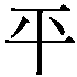凡社
〈参考文献〉
植木朝子『梁塵秘抄の世界 中世を映す歌謡』（角川選書459）二〇〇九年十二月、角川学芸出版
植木朝子『梁塵秘抄とその周縁』二〇〇一年五月、三省堂
西郷信綱『梁塵秘抄』（日本詩人選22）一九七六年三月、筑摩書房
堀越孝一『わが梁塵秘抄』二〇〇四年五月、図書新聞
加藤周一『梁塵秘抄』（古典を読む23）一九八六年二月、岩波書店
五味文彦『梁塵秘抄のうたと絵』（文春新書）二〇〇二年一月、文藝春秋
滝川政次郎『江口・神崎』（日本歴史新書）一九六五年十一月、至文堂
塚本邦雄『君が愛せし』（鑑賞古典歌謡）一九七七年十月、みすず書房
一一二七（大治二）年
九月一一日、鳥羽上皇と中宮・藤原璋子の第四皇子として生まれる。諱（生前の名。「後白河」は謚である）は雅仁。
一一二九（大治四）年 二歳
曽祖父の白河法皇が亡くなり、鳥羽上皇による院政が開始される。
一一三九（保延五）年 一二歳
一二月、数え一三歳で元服して二品に叙せられる。
一一四一（永治元）年 一四歳
一二月、鳥羽法皇（三月に出家して上皇から法皇に）は、崇徳天皇に譲位を迫り、体仁親王を即位させる（近衛天皇）。
一一四三（康治二）年 一六歳
最初の妃であり、源有仁の養女だった懿子が、守仁親王を産んで急死する。
一一五五（久寿二）年 二八歳
七月二四日、異母弟の近衛天皇の急死により皇位を継ぎ、第七七代後白河天皇となる。守仁親王の即位までの中継ぎとして、立太子（皇太子として立つための儀式）しないまま、数え二九歳で即位する。
一一五六（保元元）年 二九歳
鳥羽法皇が死去し、保元の乱が起きる。
一一五八（保元三）年 三一歳
八月一一日、第一皇子の守仁親王（二条天皇）に譲位し、上皇となる。
一一五九（平治元）年 三二歳
一二月九日、平治の乱。御所・三条殿が藤原信頼・源義朝の軍勢によって襲撃され、後白河院は幽閉されるが、自力で脱出し、仁和寺に避難する。
一一六一（永暦二）年 三四歳
四月一三日、完成した御所に移り住む。一〇月二三日、最初の熊野詣を行う。
一一六四（長寛二）年 三七歳
一二月一七日、多年の宿願により、千一体の観音堂・蓮華王院を造営する。
一一六五（永万元）年 三八歳
六月二五日、二条天皇は病状の悪化で順仁親王（六条天皇）に譲位し、七月二八日に死去する。
一一六七（仁安二）年 四〇歳
正月一九日、平清盛の長男・重盛に対して東山・東海・山陽・南海道の山賊・海賊追討宣旨を下す。
一一六八（仁安三）年 四一歳
三月二〇日、第四皇子・憲仁、即位する（高倉天皇）。母親は平滋子（後の建春門院）。
平清盛、病に倒れる。後白河院は熊野詣から戻る途中だったが、六波羅に見舞いに行く。
一一六九（嘉応元）年 四二歳
二月一九日、今様の師、乙前八四歳で死去する。
三月、「口伝集」を「記し畢はりぬ」。六月、園城寺で受戒する。
一一七〇（嘉応二）年 四三歳
九月二〇日、後白河院は福原に御幸して宋人と会う。
一一七四（承安四）年 四七歳
三月一六日、後白河院は建春門院（滋子）を伴って安芸国厳島神社に参詣するため京都を出発し、福原を経由して二六日に到着する。
一一七六（安元二）年 四九歳
後白河院は数え五〇歳を迎え、三月四日から六日にかけて、法住寺殿で賀宴が催される。
一一七七（安元三）年 五〇歳
鹿ヶ谷事件が起きる。
一一八〇（治承四）年 五三歳
高倉天皇が退位し、その第一皇子が数え三歳で即位する（安徳天皇）。母は平清盛の娘・徳子、後の建礼門院である。幼少のため、後白河院が再び院政を敷く。
一一八三（寿永二）年 五六歳
源義仲に平氏追討を命ずる。
一一八四（寿永三）年 五七歳
正月二〇日、源範頼・義経軍の攻撃で源義仲は敗死する。
一一八五（元暦二）年 五八歳
三月二四日、源義経は四国に渡り、平氏の本拠地・屋島を攻略し、壇ノ浦の戦いで平氏を滅ぼす。安徳天皇、入水。高倉天皇の第四皇子・尊成親王が即位する（後鳥羽天皇）。
一一八九（文治五）年 六二歳
源義経、奥州衣川館で自害。
一一九〇（建久元）年 六三歳
源頼朝が京都入りし、後白河院に砂金等を献上する。
一一九二年（建久三）年 六五歳
三月一三日、後白河院、死去。
この光文社古典新訳文庫で『歎異抄』を現代語訳した時から、私が次に取り組むのは『梁塵秘抄』であることは決まっていました。かねてから、『梁塵秘抄』のこれまでの注釈や解釈、解説や現代語訳に不満を持っていた私は、「今様」の歌謡集は、まさに〝現代風〟の歌謡として〝現代語訳〟しなければ意味がないと思っていたからです。俗謡や民謡の猥歌や春歌を、古典風のお上品な作品として解釈し、鑑賞する「古典文学研究」にはうんざりしていました。できれば流行歌風に、演歌調に『梁塵秘抄』の歌謡を作り替えたいという私の意図に、本文庫の編集長である駒井稔氏も、担当編集者である佐藤美奈子氏も、賛同していてくれたからです。
だが、「カラオケで歌えるような」という目論見は、訳の作業を進める上で、やや後退せざるをえませんでした。原歌に少しでも関連づけようとすると、自由な創作演歌にはしようがありませんし、原歌の面白さを現代の読者に伝えたいという意図が先に立って、大胆で、原歌離れをした、大幅なリメイクとならない場合が多くなってしまったからです。それでも、いくつかの歌謡については、私の最初の意図通りに、現在の〝流行歌〟としても、（もしかして）通用するのではないかという数編を作り出すことができたのではないかと思っています。もし、これらの歌詞に誰かが曲を付けてくれ、実際にカラオケで歌うことができるようになれば、私としてはこれ以上の喜びはありません。
歌の数を百としたのは、きりのよい数字にしたかっただけで、他意はありません。五百七十余首の「今様歌」のなかで、私が面白いと思ったもの、訳してみて、現代語でも何とか作品として読めるものを選んだのですが、やはり「四句神歌」の俗謡調、民謡調のものが多くなったのは、そもそもの私の目論見からして当然のことでしょう。「ものは尽くし」調の歌には、訳しにくいものが多かったので、あまり採っていません。
私は、歌謡曲（とりわけ、女性演歌）が好きです。わけても、石川さゆり、八代亜紀、都はるみ、テレサ・テン、チュ・ヒョンミ（周炫美）、ケー・ウンスク（桂銀淑、どうか、不祥事から早く立ち直って、あのハスキーな歌声をもう一度、聞かせてほしいものです）が大好きです。私には、彼女たちが現在の「乙前」であり、「ささ浪」であると思われます。彼女たちの歌を「ｉＰａｄ」で聞きながら、私はこの『梁塵秘抄』の訳業を、北京の友誼賓館の一室で集中的に行いました。そのおかげで、存外、時間をあまりかけずに仕事を進めることができました（もちろん、それまでの準備期間は長かったのですが）。私のために、北京での、この一カ月の生活を提供してくれた北京日本学研究センターと、日本の国際交流基金の関係者のみなさんに感謝いたします。謝々。
二〇一〇年十一月三十日 北京友誼賓館 頤園公寓の一室にて
川村 湊
本書で使用した図版のうち、『建保歌合』『人倫訓蒙図彙』『和国諸職絵つくし幷歌合』『職人尽図巻』『東北院歌合』『職人尽絵』については『日本庶民生活史料集成 第三十巻 諸職風俗図絵』（三一書房刊）より、また「伝城南祭図」については『神社古図集』（臨川書店刊）より転載させていただきました。
制作／光文社電子書店 ２０１３年４月30日
◎本文中、今日の社会情勢と異なる事実や表現、あるいは差別的と受け取られかねない表現がある場合もありますが、著者に差別的意図のないこと、および作品が書かれた時代的背景を考慮し、概ね発表時のままといたしました。読者の皆様にご理解いただきますようお願いいたします。（光文社電子書店）